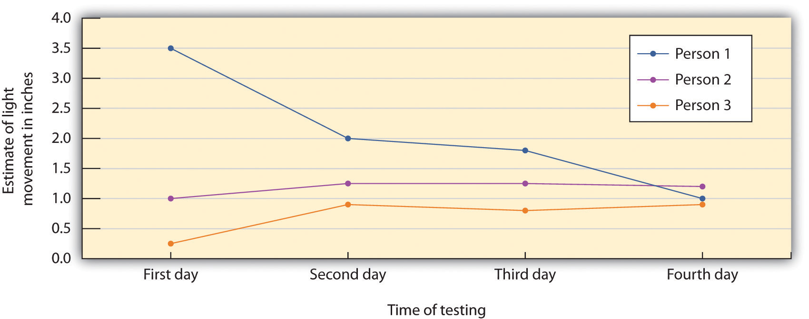

Sam Spady, a 19-year-old student at Colorado State University, had been a homecoming queen, a class president, a captain of the cheerleading team, and an honor student in high school. But despite her outstanding credentials and her hopes and plans for the future, Sam Spady died on September 5, 2004, after a night of binge drinking with her friends.
Sam had attended a number of different parties on the Saturday night that she died, celebrating the CSU football game against the University of Colorado–Boulder. When she passed out, after consuming 30 to 40 beers and shots over the evening, her friends left her alone in an empty room in a fraternity house to sleep it off. The next morning a member of the fraternity found her dead (Sidman, 2006).Sidman, J. (2006, June 26). A college student’s death may help save lives. USA Today. Retrieved from http://www.usatoday.com/news/health/2006-06-26-spady -binge-drinking_x.htm
Sam is one of an estimated 1,700 college students between the ages of 18 and 24 who die from alcohol-related injuries each year. These deaths come from motor vehicle crashes, assaults, and overdosing as a result of binge drinking (National Institute on Alcohol Abuse and Alcoholism, 2010).National Institute on Alcohol Abuse and Alcoholism. (2010). Statistical snapshot of college drinking. Retrieved from http://www.niaaa.nih.gov/AboutNIAAA/NIAAASponsoredPrograms /StatisticalSnapshotCollegeDrinking.htm
“Nobody is immune,” said Sam’s father. “She was a smart kid, and she was a good kid. And if it could happen to her, it could happen to anybody.”
Despite efforts at alcohol education, Pastor Reza Zadeh, a former CSU student, says little has changed in the drinking culture since Sam’s death: “People still feel invincible. The bars still have 25-cent shot night and two-for-ones and no cover for girls”(Sidman, 2006).Sidman, J. (2006, June 26). A college student’s death may help save lives. USA Today. Retrieved from http://www.usatoday.com/news/health/2006-06-26-spady -binge-drinking_x.htm
Sam’s parents have created a foundation in her memory, dedicated to informing people, particularly college students, about the dangers of binge drinking, and to helping them resist the peer pressure that brings it on. You can learn more at http://samspadyfoundation.org about the foundation.
We have now reached the last chapter of our journey through the field of psychology. The subdiscipline of psychology discussed in this chapter reflects the highest level of explanation that we will consider. This topic, known as social psychologyThe scientific study of how we feel about, think about, and behave toward the other people around us, and how those people influence our thoughts, feelings, and behavior., is defined as the scientific study of how we feel about, think about, and behave toward the other people around us, and how those people influence our thoughts, feelings, and behavior.
The subject matter of social psychology is our everyday interactions with people, including the social groups to which we belong. Questions these psychologists ask include why we are often helpful to other people but at other times are unfriendly or aggressive; why we sometimes conform to the behaviors of others but at other times are able to assert our independence; and what factors help groups work together in effective and productive, rather than in ineffective and unproductive, ways. A fundamental principle of social psychology is that, although we may not always be aware of it, our cognitions, emotions, and behaviors are substantially influenced by the social situationThe people with whom we are interacting., or the people with whom we are interacting.
In this chapter we will introduce the principles of social cognitionThe part of human thinking that helps us understand and predict the behavior of ourselves and others.—the part of human thinking that helps us understand and predict the behavior of ourselves and others—and consider the ways that our judgments about other people guide our behaviors toward them. We’ll explore how we form impressions of other people, and what makes us like or dislike them. We’ll also see how our attitudesOur enduring evaluations of people or things.—our enduring evaluations of people or things—influence, and are influenced by, our behavior.
Then we will consider the social psychology of interpersonal relationships, including the behaviors of altruism, aggression, and conformity. We will see that humans have a natural tendency to help each other, but that we may also become aggressive if we feel that we are being threatened. And we will see how social normsThe accepted beliefs about what we do or what we should do in particular social situations., the accepted beliefs about what we do or what we should do in particular social situations (such as the norm of binge drinking common on many college campuses), influence our behavior. Finally, we will consider the social psychology of social groups, with a particular focus on the conditions that limit and potentially increase productive group performance and decision-making.
The principles of social psychology can help us understand tragic events such as the death of Sam Spady. Many people might blame the tragedy on Sam herself, asking, for instance, “Why did she drink so much?” or “Why didn’t she say no?” As we will see in this chapter, research conducted by social psychologists shows that the poor decisions Sam made on the night she died may have been due less to her own personal weaknesses or deficits than to her desires to fit in with and be accepted by the others around her—desires that in her case led to a disastrous outcome.
One important aspect of social cognition involves forming impressions of other people. Making these judgments quickly and accurately helps us guide our behavior to interact appropriately with the people we know. If we can figure out why our roommate is angry at us, we can react to resolve the problem; if we can determine how to motivate the people in our group to work harder on a project, then the project might be better.
Our initial judgments of others are based in large part on what we see. The physical features of other people, particularly their sex, race, age, and physical attractiveness, are very salient, and we often focus our attention on these dimensions (Schneider, 2003; Zebrowitz & Montepare, 2006).Schneider, D. J. (2004). The psychology of stereotyping. New York, NY: Guilford Press; Zebrowitz, L. A., & Montepare, J. (2006). The ecological approach to person perception: Evolutionary roots and contemporary offshoots. In M. Schaller, J. A. Simpson, & D. T. Kenrick (Eds.), Evolution and social psychology (pp. 81–113). Madison, CT: Psychosocial Press.
Although it may seem inappropriate or shallow to admit it, we are strongly influenced by the physical attractiveness of others, and many cases physical attractiveness is the most important determinant of our initial liking for other people (Walster, Aronson, Abrahams, & Rottmann, 1966).Walster, E., Aronson, V., Abrahams, D., & Rottmann, L. (1966). Importance of physical attractiveness in dating behavior. Journal of Personality and Social Psychology, 4(5), 508–516. Infants who are only a year old prefer to look at faces that adults consider to be attractive than at unattractive faces (Langlois, Ritter, Roggman, & Vaughn, 1991).Langlois, J. H., Ritter, J. M., Roggman, L. A., & Vaughn, L. S. (1991). Facial diversity and infant preferences for attractive faces. Developmental Psychology, 27(1), 79–84. Evolutionary psychologists have argued that our belief that “what is beautiful is also good” may be because we use attractiveness as a cue for health; people whom we find more attractive may also, evolutionarily, have been healthier (Zebrowitz, Fellous, Mignault, & Andreoletti, 2003).Zebrowitz, L. A., Fellous, J.-M., Mignault, A., & Andreoletti, C. (2003). Trait impressions as overgeneralized responses to adaptively significant facial qualities: Evidence from connectionist modeling. Personality and Social Psychology Review, 7(3), 194–215.
One indicator of health is youth. Leslie Zebrowitz and her colleagues (Zebrowitz, 1996; Zebrowitz, Luevano, Bronstad, & Aharon, 2009)Zebrowitz, L. A. (1996). Physical appearance as a basis of stereotyping. In C. N. Macrae, C. Stangor, & M. Hewstone (Eds.), Stereotypes and stereotyping (pp. 79–120). New York, NY: Guilford Press; Zebrowitz, L. A., Luevano, V. X., Bronstad, P. M., & Aharon, I. (2009). Neural activation to babyfaced men matches activation to babies. Social Neuroscience, 4(1), 1–10. have extensively studied the tendency for both men and women to prefer people whose faces have characteristics similar to those of babies. These features include large, round, and widely spaced eyes, a small nose and chin, prominent cheekbones, and a large forehead. People who have baby faces (both men and women) are seen as more attractive than people who are not baby-faced.
Figure 14.2
People with baby faces are perceived as attractive.
Source: Efron photo courtesy of Johan Ferreira, http://www.flickr.com/photos/23664669@N08/2874031622. Bilson photo courtesy of Stephen Lovekin / Getty Images, http://www.flickr.com/photos/34128229@N06/3182841715.
Another indicator of health is symmetry. People are more attracted to faces that are more symmetrical than they are to those that are less symmetrical, and this may be due in part to the perception that symmetrical faces are perceived as healthier (Rhodes et al., 2001).Rhodes, G., Zebrowitz, L. A., Clark, A., Kalick, S. M., Hightower, A., & McKay, R. (2001). Do facial averageness and symmetry signal health? Evolution and Human Behavior, 22(1), 31–46.
Although you might think that we would prefer faces that are unusual or unique, in fact the opposite is true. Langlois and Roggman (1990)Langlois, J. H., & Roggman, L. A. (1990). Attractive faces are only average. Psychological Science, 1(2), 115–121. showed college students the faces of men and women. The faces were composites made up of the average of 2, 4, 8, 16, or 32 faces. The researchers found that the more faces that were averaged into the stimulus, the more attractive it was judged. Again, our liking for average faces may be because they appear healthier.
Although preferences for youthful, symmetrical, and average faces have been observed cross-culturally, and thus appear to be common human preferences, different cultures may also have unique beliefs about what is attractive. In modern Western cultures, “thin is in,” and people prefer those who have little excess fat (Crandall, Merman, & Hebl, 2009).Crandall, C. S., Merman, A., & Hebl, M. (2009). Anti-fat prejudice. In T. D. Nelson (Ed.), Handbook of prejudice, stereotyping, and discrimination (pp. 469–487). New York, NY: Psychology Press. The need to be thin to be attractive is particularly strong for women in contemporary society, and the desire to maintain a low body weight can lead to low self-esteem, eating disorders, and other unhealthy behaviors. However, the norm of thinness has not always been in place; the preference for women with slender, masculine, and athletic looks has become stronger over the past 50 years. In contrast to the relatively universal preferences for youth, symmetry, and averageness, other cultures do not show such a strong propensity for thinness (Sugiyama, 2005).Sugiyama, L. S. (2005). Physical attractiveness in adaptationist perspective. In D. M. Buss (Ed.), The handbook of evolutionary psychology (pp. 292–343). Hoboken, NJ: John Wiley & Sons.
We frequently use people’s appearances to form our judgments about them and to determine our responses to them. The tendency to attribute personality characteristics to people on the basis of their external appearance or their social group memberships is known as stereotypingThe tendency to attribute personality characteristics to people on the basis of their external appearance or their social group memberships.. Our stereotypes about physically attractive people lead us to see them as more dominant, sexually warm, mentally healthy, intelligent, and socially skilled than we perceive physically unattractive people (Langlois et al., 2000).Langlois, J. H., Kalakanis, L., Rubenstein, A. J., Larson, A., Hallam, M., & Smoot, M. (2000). Maxims or myths of beauty? A meta-analytic and theoretical review. Psychological Bulletin, 126(3), 390–423. And our stereotypes lead us to treat people differently—the physically attractive are given better grades on essay exams, are more successful on job interviews, and receive lighter sentences in court judgments than their less attractive counterparts (Hosoda, Stone-Romero, & Coats, 2003; Zebrowitz & McDonald, 1991).Hosoda, M., Stone-Romero, E. F., & Coats, G. (2003). The effects of physical attractiveness on job-related outcomes: A meta-analysis of experimental studies. Personnel Psychology, 56(2), 431–462; Zebrowitz, L. A., & McDonald, S. M. (1991). The impact of litigants’ baby-facedness and attractiveness on adjudications in small claims courts. Law & Human Behavior, 15(6), 603–623.
In addition to stereotypes about physical attractiveness, we also regularly stereotype people on the basis of their sex, race, age, religion, and many other characteristics, and these stereotypes are frequently negative (Schneider, 2004).Schneider, D. J. (2004). The psychology of stereotyping. New York, NY: Guilford Press. Stereotyping is unfair to the people we judge because stereotypes are based on our preconceptions and negative emotions about the members of the group. Stereotyping is closely related to prejudiceThe tendency to dislike people because of their appearance or group memberships., the tendency to dislike people because of their appearance or group memberships, and discriminationNegative behaviors toward others based on prejudice., negative behaviors toward others based on prejudice. Stereotyping, prejudice, and discrimination work together. We may not vote for a gay person for public office because of our negative stereotypes about gays, and we may avoid people from other religions or those with mental illness because of our prejudices.
Some stereotypes may be accurate in part. Research has found, for instance, that attractive people are actually more sociable, more popular, and less lonely than less attractive individuals (Langlois et al., 2000).Langlois, J. H., Kalakanis, L., Rubenstein, A. J., Larson, A., Hallam, M., & Smoot, M. (2000). Maxims or myths of beauty? A meta-analytic and theoretical review. Psychological Bulletin, 126(3), 390–423. And, consistent with the stereotype that women are “emotional,” women are, on average, more empathic and attuned to the emotions of others than are men (Hall & Schmid Mast, 2008).Hall, J. A., & Schmid Mast, M. (2008). Are women always more interpersonally sensitive than men? Impact of goals and content domain. Personality and Social Psychology Bulletin, 34(1), 144–155. Group differences in personality traits may occur in part because people act toward others on the basis of their stereotypes, creating a self-fulfilling prophecy. A self-fulfilling prophecyA situation that occurs when our expectations about the personality characteristics of others lead us to behave toward those others in ways that make those beliefs come true. occurs when our expectations about the personality characteristics of others lead us to behave toward those others in ways that make those beliefs come true. If I have a stereotype that attractive people are friendly, then I may act in a friendly way toward people who are attractive. This friendly behavior may be reciprocated by the attractive person, and if many other people also engage in the same positive behaviors with the person, in the long run he or she may actually become friendlier.
But even if attractive people are on average friendlier than unattractive people, not all attractive people are friendlier than all unattractive people. And even if women are, on average, more emotional than men, not all men are less emotional than all women. Social psychologists believe that it is better to treat people as individuals rather than rely on our stereotypes and prejudices, because stereotyping and prejudice are always unfair and often inaccurate (Fiske, 1989; Stangor, 1995).Fiske, S. T. (1989). Examining the role of intent: Toward understanding its role in stereotyping and prejudice. In J. S. Uleman & J. A. Bargh (Eds.), Unintended thought (pp. 253–286). New York, NY: Guilford Press; Stangor, C. (1995). Content and application inaccuracy in social stereotyping. In Y. T. Lee, L. J. Jussim, & C. R. McCauley (Eds.), Stereotype accuracy: Toward appreciating group differences (pp. 275–292). Washington, DC: American Psychological Association. Furthermore, many of our stereotypes and prejudices occur out of our awareness, such that we do not even know that we are using them.
You might want to test your own stereotypes and prejudices by completing the Implicit Association Test, a measure of unconscious stereotyping.
We use our stereotypes and prejudices in part because they are easy; if we can quickly size up people on the basis of their physical appearance, that can save us a lot of time and effort. We may be evolutionarily disposed to stereotyping. Because our primitive ancestors needed to accurately separate members of their own kin group from those of others, categorizing people into “us” (the ingroup) and “them” (the outgroup) was useful and even necessary (Neuberg, Kenrick, & Schaller, 2010).Neuberg, S. L., Kenrick, D. T., & Schaller, M. (2010). Evolutionary social psychology. In S. T. Fiske, D. T. Gilbert, & G. Lindzey (Eds.), Handbook of social psychology (5th ed., Vol. 2, pp. 761–796). Hoboken, NJ: John Wiley & Sons. And the positive emotions that we experience as a result of our group memberships—known as social identityThe positive emotions that we experience as a result of our group memberships.—can be an important and positive part of our everyday experiences (Hogg, 2003).Hogg, M. A. (2003). Social identity. In M. R. Leary & J. P. Tangney (Eds.), Handbook of self and identity (pp. 462–479). New York, NY: Guilford Press. We may gain social identity as members of our university, our sports teams, our religious and racial groups, and many other groups.
Figure 14.3
Social identity is the positive emotions that we experience as a member of an important social group.
Source: Photo courtesy of Caitlin Regan, http://www.flickr.com/photos/caitlinator/4006197725.
But the fact that we may use our stereotypes does not mean that we should use them. Stereotypes, prejudice, and discrimination, whether they are consciously or unconsciously applied, make it difficult for some people to effectively contribute to society and may create both mental and physical health problems for them (Swim & Stangor, 1998).Swim, J. T., & Stangor, C. (1998). Prejudice: The target’s perspective. Santa Barbara, CA: Academic Press. In some cases getting beyond our prejudices is required by law, as detailed in the U.S. Civil Rights Act of 1964, the Equal Opportunity Employment Act of 1972, and the Fair Housing Act of 1978.
There are individual differences in prejudice, such that some people are more likely to try to control and confront their stereotypes and prejudices whereas others apply them more freely (Czopp, Monteith, & Mark, 2006; Plant & Devine, 1998).Czopp, A. M., Monteith, M. J., & Mark, A. Y. (2006). Standing up for a change: Reducing bias through interpersonal confrontation. Journal of Personality and Social Psychology, 90(5), 784–803; Plant, E. A., & Devine, P. G. (1998). Internal and external motivation to respond without prejudice. Journal of Personality and Social Psychology, 75(3), 811–832. For instance, some people believe in group hierarchies—that some groups are naturally better than others—whereas other people are more egalitarian and hold fewer prejudices (Sidanius & Pratto, 1999; Stangor & Leary, 2006).Sidanius, J., & Pratto, F. (1999). Social dominance: An intergroup theory of social hierarchy and oppression. New York, NY: Cambridge University Press; Stangor, C., & Leary, S. (2006). Intergroup beliefs: Investigations from the social side. Advances in Experimental Social Psychology, 38, 243–283.
Social psychologists believe that we should work to get past our prejudices. The tendency to hold stereotypes and prejudices and to act on them can be reduced, for instance, through positive interactions and friendships with members of other groups, through practice in avoiding using them, and through education (Hewstone, 1996).Hewstone, M. (1996). Contact and categorization: Social psychological interventions to change intergroup relations. In C. N. Macrae, C. Stangor, & M. Hewstone (Eds.), Stereotypes and stereotyping (pp. 323–368). New York, NY: Guilford Press.
Research has demonstrated that people can draw very accurate conclusions about others on the basis of very limited data. Ambady and Rosenthal (1993)Ambady, N., & Rosenthal, R. (1993). Half a minute: Predicting teacher evaluations from thin slices of nonverbal behavior and physical attractiveness. Journal of Personality & Social Psychology, 64(3), 431–441. made videotapes of six female and seven male graduate students while they were teaching an undergraduate course. The courses covered diverse areas of the college curriculum, including humanities, social sciences, and natural sciences. For each teacher, three 10-second video clips were taken: 10 seconds from the first 10 minutes of the class, 10 seconds from the middle of the class, and 10 seconds from the last 10 minutes of the class.
The researchers then asked nine female undergraduates to rate the clips of the teachers on 15 dimensions including optimistic, confident, active, enthusiastic, dominant, likable, warm, competent, and supportive. Ambady and her colleagues then compared the ratings of the participants who had seen the teacher for only 30 seconds with the ratings of the same instructors that had been made by students who had spent a whole semester with the teacher, and who had rated her at the end of the semester on scales such as “Rate the quality of the section overall” and “Rate section leader’s performance overall.” As you can see in Table 14.1 "Accurate Perceptions in 30 Seconds", the ratings of the participants and the ratings of the students were highly positively correlated.
Table 14.1 Accurate Perceptions in 30 Seconds
| Variable | Pearson Correlation Coefficient (r) |
|---|---|
| Accepting | 0.50 |
| Active | 0.77 |
| Attentive | 0.48 |
| Competent | 0.56 |
| Confident | 0.82 |
| Dominant | 0.79 |
| Empathic | 0.45 |
| Enthusiastic | 0.76 |
| Honest | 0.32 |
| Likable | 0.73 |
| (Not) anxious | 0.26 |
| Optimistic | 0.84 |
| Professional | 0.53 |
| Supportive | 0.55 |
| Warm | 0.67 |
| Overall, across all traits | 0.76 |
| This table shows the Pearson correlation coefficients between the impressions that a group of students made after they had seen a video of instructors teaching for only 30 seconds and the teaching ratings of the same instructors made by students who had spent a whole semester in the class. You can see that the correlations are all positive, and that many of them are quite large. The conclusion is that people are sometimes able to draw accurate impressions about other people very quickly. | |
Source: Ambady, N., & Rosenthal, R. (1993). Half a minute: Predicting teacher evaluations from thin slices of nonverbal behavior and physical attractiveness. Journal of Personality & Social Psychology, 64(3), 431–441.
If the finding that judgments made about people in 30 seconds correlate highly with judgments made about the same people after a whole semester surprises you, then perhaps you may be even more surprised to hear that we do not even need that much time. Indeed, Willis and Todorov (2006)Willis, J., & Todorov, A. (2006). First impressions: Making up your mind after a 100-ms exposure to a face. Psychological Science, 17(7), 592–598. found that even a tenth of a second was enough to make judgments that correlated highly with those same judgments made by other people who were given several minutes to make the judgments. Other research has found that we can make accurate judgments, for instance, about our perceptions of salespersons (Ambady, Krabbenhoft, & Hogan, 2006)Ambady, N., Krabbenhoft, M. A., & Hogan, D. (2006). The 30-sec sale: Using thin-slice judgments to evaluate sales effectiveness. Journal of Consumer Psychology, 16(1), 4–13. and about the sexual orientation of other people (Ambady, Hallahan, & Conner, 1999),Ambady, N., Hallahan, M., & Conner, B. (1999). Accuracy of judgments of sexual orientation from thin slices of behavior. Journal of Personality and Social Psychology, 77(3), 538–547. in just a few seconds. Todorov, Mandisodza, Goren, and Hall (2005)Todorov, A., Mandisodza, A. N., Goren, A., & Hall, C. C. (2005). Inferences of competence from faces predict election outcomes. Science, 308(5728), 1623–1626. found that people voted for political candidates in large part on the basis of whether or not their faces, seen only for one second, looked like faces of competent people. Taken together, this research shows that we are well able to form initial impressions of others quickly and often quite accurately.
One of the most important tasks faced by humans is to develop successful relationships with others. These relationships include acquaintanceships and friendships but also the more important close relationshipsLong-term intimate and romantic relationships—for instance, a marriage., which are the long-term intimate and romantic relationships that we develop with another person—for instance, in a marriage (Hendrick & Hendrick, 2000).Hendrick, C., & Hendrick, S. S. (Eds.). (2000). Close relationships: A sourcebook. Thousand Oaks, CA: Sage. Because most of us will want to enter into a close relationship at some point, and because close relationships are evolutionarily important as they form the basis for effective child rearing, it is useful to know what psychologists have learned about the principles of liking and loving within them.
A major interest of social psychologists is the study of interpersonal attraction, or what makes people like, and even love, each other. One important factor is a perceived similarity in values and beliefs between the partners (Davis & Rusbult, 2001).Davis, J. L., & Rusbult, C. E. (2001). Attitude alignment in close relationships. Journal of Personality & Social Psychology, 81(1), 65–84. Similarity is important for relationships both because it is more convenient (it’s easier if both partners like to ski or go to the movies than if only one does), but also because similarity supports our values—I can feel better about myself and my choice of activities if I see that you also enjoy doing the same things that I do.
Liking is also enhanced by self-disclosure, the tendency to communicate frequently, without fear of reprisal, and in an accepting and empathetic manner. Friends are friends because we can talk to them openly about our needs and goals, and because they listen to and respond to our needs (Reis & Aron, 2008).Reis, H. T., & Aron, A. (2008). Love: What is it, why does it matter, and how does it operate? Perspectives on Psychological Science, 3(1), 80–86. But self-disclosure must be balanced. If I open up to you about the concerns that are important to me, I expect you to do the same in return. If the self-disclosure is not reciprocal, the relationship may not last.
Another important determinant of liking is proximity, or the extent to which people are physically near us. Research has found that we are more likely to develop friendships with people who are nearby, for instance, those who live in the same dorm that we do, and even with people who just happen to sit nearer to us in our classes (Back, Schmukle, & Egloff, 2008).Back, M. D., Schmukle, S. C., & Egloff, B. (2008). Becoming friends by chance. Psychological Science, 19(5), 439–440.
Proximity has its effect on liking through the principle of mere exposureThe tendency to prefer stimuli (including but not limited to people) that we have seen more frequently., which is the tendency to prefer stimuli (including but not limited to people) that we have seen more frequently. Moreland and Beach (1992)Moreland, R. L., & Beach, S. R. (1992). Exposure effects in the classroom: The development of affinity among students. Journal of Experimental Social Psychology, 28(3), 255–276. studied mere exposure by having female confederates attend a large lecture class of over 100 students 0, 5, 10, or 15 times during a semester. At the end of the term, the other students in the class were shown pictures of the confederates and asked to indicate both if they recognized them and also how much they liked them. The number of times the confederates had attended class didn’t influence the other students’ ability to recognize them, but it did influence their liking for them. As predicted by the mere exposure hypothesis, students who had attended class more often were liked more (Figure 14.5 "Mere Exposure in the Classroom").
Figure 14.5 Mere Exposure in the Classroom

Richard Moreland and Scott Beach (1992) had female confederates visit classrooms 0, 5, 10, or 15 times over the course of a semester. Then the students rated their liking of the confederates. As predicted by the principles of mere exposure, confederates who had attended class more often were also liked more.
Source: Adapted from Moreland, R. L., & Beach, S. R. (1992). Exposure effects in the classroom: The development of affinity among students. Journal of Experimental Social Psychology, 28(3), 255–276.
The effect of mere exposure is powerful and occurs in a wide variety of situations. Infants tend to smile at a photograph of someone they have seen before more than they smile at a photograph of someone they are seeing for the first time (Brooks-Gunn & Lewis, 1981),Brooks-Gunn, J., & Lewis, M. (1981). Infant social perception: Responses to pictures of parents and strangers. Developmental Psychology, 17(5), 647–649. and people prefer side-to-side reversed images of their own faces over their normal (nonreversed) face, whereas their friends prefer their normal face over the reversed one (Mita, Dermer, & Knight, 1977).Mita, T. H., Dermer, M., & Knight, J. (1977). Reversed facial images and the mere-exposure hypothesis. Journal of Personality & Social Psychology, 35(8), 597–601. This is expected on the basis of mere exposure, since people see their own faces primarily in mirrors and thus are exposed to the reversed face more often.
Mere exposure may well have an evolutionary basis. We have an initial fear of the unknown, but as things become more familiar they seem more similar and safe, and thus produce more positive affect and seem less threatening and dangerous (Freitas, Azizian, Travers, & Berry, 2005).Freitas, A. L., Azizian, A., Travers, S., & Berry, S. A. (2005). The evaluative connotation of processing fluency: Inherently positive or moderated by motivational context? Journal of Experimental Social Psychology, 41(6), 636–644. In fact, research has found that stimuli tend to produce more positive affect as they become more familiar (Harmon-Jones & Allen, 2001).Harmon-Jones, E., & Allen, J. J. B. (2001). The role of affect in the mere exposure effect: Evidence from psychophysiological and individual differences approaches. Personality & Social Psychology Bulletin, 27(7), 889–898. When the stimuli are people, there may well be an added effect. Familiar people become more likely to be seen as part of the ingroup rather than the outgroup, and this may lead us to like them more. Leslie Zebrowitz and her colleagues found that we like people of our own race in part because they are perceived as similar to us (Zebrowitz, Bornstad, & Lee, 2007).Zebrowitz, L. A., Bronstad, P. M., & Lee, H. K. (2007). The contribution of face familiarity to ingroup favoritism and stereotyping. Social Cognition, 25(2), 306–338.
In the most successful relationships the two people begin to see themselves as a single unit. Arthur Aron and his colleagues (Aron, Aron, & Smollan, 1992)Aron, A., Aron, E. N., & Smollan, D. (1992). Inclusion of other in the self scale and the structure of interpersonal closeness. Journal of Personality & Social Psychology, 63(4), 596–612. assessed the role of closeness in relationships using the Inclusion of Other in the Self Scale as shown in Figure 14.6 "The Inclusion of Other in the Self Scale". You might try completing the measure yourself for some different people that you know—for instance, your family members, friends, spouse, or girlfriend or boyfriend. The measure is simple to use and to interpret; if people see the circles representing the self and the other as more overlapping, this means that the relationship is close. But if they choose the circles that are less overlapping, then the relationship is less so.
Figure 14.6 The Inclusion of Other in the Self Scale
This scale is used to determine how close two partners feel to each other. The respondent simply circles which of the seven figures he or she feels best characterizes the relationship.
Source: Adapted from Aron, A., Aron, E. N., & Smollan, D. (1992). Inclusion of other in the self scale and the structure of interpersonal closeness. Journal of Personality & Social Psychology, 63(4), 596–612.
Although the closeness measure is very simple, it has been found to be predictive of people’s satisfaction with their close relationships, and of the tendency for couples to stay together (Aron, Aron, Tudor, & Nelson, 1991; Aron, Paris, & Aron, 1995).Aron, A., Aron, E. N., Tudor, M., & Nelson, G. (1991). Close relationships as including other in the self. Journal of Personality & Social Psychology, 60, 241–253; Aron, A., Paris, M., & Aron, E. N. (1995). Falling in love: Prospective studies of self-concept change. Journal of Personality & Social Psychology, 69(6), 1102–1112. When the partners in a relationship feel that they are close, and when they indicate that the relationship is based on caring, warmth, acceptance and social support, we can say that the relationship is intimate (Reis & Aron, 2008).Reis, H. T., & Aron, A. (2008). Love: What is it, why does it matter, and how does it operate? Perspectives on Psychological Science, 3(1), 80–86.
When a couple begins to take care of a household together, has children, and perhaps has to care for elderly parents, the requirements of the relationship become correspondingly bigger. As a result of this complexity, the partners in close relationships increasingly turn to each other for help in coordinating activities, remembering dates and appointments, and accomplishing tasks. Relationships are close in part because the couple becomes highly interdependent, relying on each other to meet important goals (Berscheid & Reis, 1998).Berscheid, E., & Reis, H. T. (1998). Attraction and close relationships. In D. T. Gilbert, S. T. Fiske, & G. Lindzey (Eds.), The handbook of social psychology (4th ed., Vols. 1–2, pp. 193–281). New York, NY: McGraw-Hill.
In relationships in which a positive rapport between the partners is developed and maintained over a period of time, the partners are naturally happy with the relationship and they become committed to it. Commitment refers to the feelings and actions that keep partners working together to maintain the relationship (Rusbult, Olsen, Davis, Hannon, 2001)Rusbult, C. E., Olsen, N., Davis, J. L., & Hannon, P. A. (2001). Commitment and relationship maintenance mechanisms. In J. Harvey & A. Wenzel (Eds.), Close romantic relationships: Maintenance and enhancement (pp. 87–113). Mahwah, NJ: Lawrence Erlbaum Associates. and is characterized by mutual expectations that the self and the partner will be responsive to each other’s needs (Clark & Mills, 2004).Clark, M. S., & Mills, J. (2004). Interpersonal attraction in exchange and communal relationships. In H. T. Reis & C. E. Rusbult (Eds.), Close relationships: Key readings (pp. 245–256). Philadelphia, PA: Taylor & Francis. Partners who are committed to the relationship see their mates as more attractive, are less able to imagine themselves with another partner, express less interest in other potential mates, and are less likely to break up (Simpson & Harris, 1994).Simpson, J. A., & Harris, B. A. (1994). Interpersonal attraction. In A. L. Weber & J. H. Harvey (Eds.), Perspectives on close relationships (pp. 45–66). Boston, MA: Allyn & Bacon.
People also find relationships more satisfactory, and stay in them longer, when they feel that they are being rewarded by them. When the needs of either or both of the partners are not being met, the relationship is in trouble. This is not to say that people only think about the benefits they are getting; they will also consider the needs of the other. But over the long term, both partners must benefit from the relationship.
Although sexual arousal and excitement are more important early on in relationships, intimacy is also determined by sexual and romantic attraction. Indeed, intimacy is also dependent on passion—the partners must display positive affect toward each other. Happy couples are in positive moods when they are around each other; they laugh with each other, express approval rather than criticism of each other’s behaviors, and enjoy physical contact. People are happier in their relationships when they view the other person in a positive or even an “idealized” sense, rather than a more realistic and perhaps more negative one (Murray, Holmes, & Griffin, 1996).Murray, S. L., Holmes, J. G., & Griffin, D. W. (1996). The benefits of positive illusions: Idealization and the construction of satisfaction in close relationships. Journal of Personality & Social Psychology, 70(1), 79–98.
Margaret Clark and Edward Lemay (2010)Clark, M. S., & Lemay, E. P., Jr. (2010). Close relationships. In S. T. Fiske, D. T. Gilbert, & G. Lindzey (Eds.), Handbook of social psychology (5th ed., Vol. 2, pp. 898–940). Hoboken, NJ: John Wiley & Sons. recently reviewed the literature on close relationships and argued that their most important characteristic is a sense of responsiveness. People are happy, healthy, and likely to stay in relationships in which they are sure that they can trust the other person to understand, validate, and care for them. It is this unconditional giving and receiving of love that promotes the welfare of both partners and provides the secure base that allows both partners to thrive.
When we observe people’s behavior we may attempt to determine if the behavior really reflects their underlying personality. If Frank hits Joe, we might wonder if Frank is naturally aggressive or if perhaps Joe had provoked him. If Leslie leaves a big tip for the waitress, we might wonder if she is a generous person or if the service was particularly excellent. The process of trying to determine the causes of people’s behavior, with the goal of learning about their personalities, is known as causal attributionThe process of trying to determine the causes of people’s behavior, with the goal of learning about their personalities. (Jones et al., 1987).Jones, E. E., Kanouse, D. E., Kelley, H. H., Nisbett, R. E., Valins, S., & Weiner, B. (Eds.). (1987). Attribution: Perceiving the causes of behavior. Hillsdale, NJ: Lawrence Erlbaum Associates.
Making causal attributions is a bit like conducting an experiment. We carefully observe the people we are interested in and note how they behave in different social situations. After we have made our observations, we draw our conclusions. Sometimes we may decide that the behavior was caused primarily by the person; this is called making a person attribution. At other times, we may determine that the behavior was caused primarily by the situation; this is called making a situation attribution. And at other times we may decide that the behavior was caused by both the person and the situation.
It is easier to make personal attributions when behavior is more unusual or unexpected. Imagine that you go to a party and you are introduced to Tess. Tess shakes your hand and says “Nice to meet you!” Can you readily conclude, on the basis of this behavior, that Tess is a friendly person? Probably not. Because the social situation demands that people act in a friendly way (shaking your hand and saying “nice to meet you”), it is difficult to know whether Tess acted friendly because of the situation or because she is really friendly. Imagine, however, that instead of shaking your hand, Tess sticks out her tongue at you and walks away. I think you would agree that it is easier in this case to infer that Tess is unfriendly because her behavior is so contrary to what one would expect (Jones, Davis, & Gergen, 1961).Jones, E. E., Davis, K. E., & Gergen, K. J. (1961). Role playing variations and their informational value for person perception. Journal of Abnormal & Social Psychology, 63(2), 302–310.
Although people are reasonably accurate in their attributions (we could say, perhaps, that they are “good enough”; Fiske, 2003),Fiske, S. T. (2003). Social beings. Hoboken, NJ: John Wiley & Sons. they are far from perfect. One error that we frequently make when making judgments about ourselves is to make self-serving attributions by judging the causes of our own behaviors in overly positive ways. If you did well on a test, you will probably attribute that success to person causes (“I’m smart,” “I studied really hard”), but if you do poorly on the test you are more likely to make situation attributions (“The test was hard,” “I had bad luck”). Although making causal attributions is expected to be logical and scientific, our emotions are not irrelevant.
Another way that our attributions are often inaccurate is that we are, by and large, too quick to attribute the behavior of other people to something personal about them rather than to something about their situation. We are more likely to say, “Leslie left a big tip, so she must be generous” than “Leslie left a big tip, but perhaps that was because the service was really excellent.” The common tendency to overestimate the role of person factors and overlook the impact of situations in judging others is known as the fundamental attribution error (or correspondence bias)The common tendency to overestimate the role of person factors and overlook the impact of social situations in judging others..
The fundamental attribution error occurs in part because other people are so salient in our social environments. When I look at you, I see you as my focus, and so I am likely to make personal attributions about you. If the situation is reversed such that people see situations from the perspectives of others, the fundamental attribution error is reduced (Storms, 1973).Storms, M. D. (1973). Videotape and the attribution process: Reversing actors’ and observers’ points of view. Journal of Personality and Social Psychology, 27(2), 165–175. And when we judge people, we often see them in only one situation. It’s easy for you to think that your math professor is “picky and detail-oriented” because that describes her behavior in class, but you don’t know how she acts with her friends and family, which might be completely different. And we also tend to make person attributions because they are easy. We are more likely to commit the fundamental attribution error—quickly jumping to the conclusion that behavior is caused by underlying personality—when we are tired, distracted, or busy doing other things (Trope & Alfieri, 1997).Trope, Y., & Alfieri, T. (1997). Effortfulness and flexibility of dispositional judgment processes. Journal of Personality and Social Psychology, 73(4), 662–674.
An important moral about perceiving others applies here: We should not be too quick to judge other people. It is easy to think that poor people are lazy, that people who say something harsh are rude or unfriendly, and that all terrorists are insane madmen. But these attributions may frequently overemphasize the role of the person, resulting in an inappropriate and inaccurate tendency to blame the victim (Lerner, 1980; Tennen & Affleck, 1990).Lerner, M. (1980). The belief in a just world: A fundamental delusion. New York, NY: Plenum; Tennen, H., & Affleck, G. (1990). Blaming others for threatening events. Psychological Bulletin, 108(2), 209–232. Sometimes people are lazy and rude, and some terrorists are probably insane, but these people may also be influenced by the situation in which they find themselves. Poor people may find it more difficult to get work and education because of the environment they grow up in, people may say rude things because they are feeling threatened or are in pain, and terrorists may have learned in their family and school that committing violence in the service of their beliefs is justified. When you find yourself making strong person attributions for the behaviors of others, I hope you will stop and think more carefully. Would you want other people to make person attributions for your behavior in the same situation, or would you prefer that they more fully consider the situation surrounding your behavior? Are you perhaps making the fundamental attribution error?
AttitudeOur relatively enduring evaluations of people and things. refer to our relatively enduring evaluations of people and things (Albarracín, Johnson, & Zanna, 2005).Albarracín, D., Johnson, B. T., & Zanna, M. P. (Eds.). (2005). The handbook of attitudes. Mahwah, NJ: Lawrence Erlbaum Associates. We each hold many thousands of attitudes, including those about family and friends, political parties and political figures, abortion rights, preferences for music, and much more. Some of our attitudes, including those about sports, roller coaster rides, and capital punishment, are heritable, which explains in part why we are similar to our parents on many dimensions (Olson, Vernon, Harris, & Jang, 2001).Olson, J. M., Vernon, P. A., Harris, J. A., & Jang, K. L. (2001). The heritability of attitudes: A study of twins. Journal of Personality & Social Psychology, 80(6), 845–860. Other attitudes are learned through direct and indirect experiences with the attitude objects (De Houwer, Thomas, & Baeyens, 2001).De Houwer, J., Thomas, S., & Baeyens, F. (2001). Association learning of likes and dislikes: A review of 25 years of research on human evaluative conditioning. Psychological Bulletin, 127(6), 853–869.
Attitudes are important because they frequently (but not always) predict behavior. If we know that a person has a more positive attitude toward Frosted Flakes than toward Cheerios, then we will naturally predict that she will buy more of the former when she gets to the market. If we know that Charlie is madly in love with Charlene, then we will not be surprised when he proposes marriage. Because attitudes often predict behavior, people who wish to change behavior frequently try to change attitudes through the use of persuasive communications. Table 14.2 "Techniques That Can Be Effective in Persuading Others" presents some of the many techniques that can be used to change people’s attitudes (Cialdini, 2001).Cialdini, R. B. (2001). Influence: Science and practice (4th ed.). Boston, MA: Allyn & Bacon.
Table 14.2 Techniques That Can Be Effective in Persuading Others
| Technique | Examples |
|---|---|
| Choose effective communicators. | Communicators who are attractive, expert, trustworthy, and similar to the listener are most persuasive. |
| Consider the goals of the listener. | If the listener wants to be entertained, then it is better to use a humorous ad; if the listener is processing the ad more carefully, use a more thoughtful one. |
| Use humor. | People are more easily persuaded when they are in a good mood. |
| Use classical conditioning. | Try to associate your product with positive stimuli such as funny jokes or attractive models. |
| Make use of the listener’s emotions. | Humorous and fear-arousing ads can be effective because they arouse the listener’s emotions. |
| Use the listener’s behavior to modify his or her attitude. | One approach is the foot-in-the-door technique. First ask for a minor request, and then ask for a larger request after the smaller request has been accepted. |
Attitudes predict behavior better for some people than for others. People who are high in self-monitoringThe tendency to regulate behavior to meet the demands of social situations.—the tendency to regulate behavior to meet the demands of social situations—tend to change their behaviors to match the social situation and thus do not always act on their attitudes (Gangestad & Snyder, 2000).Gangestad, S. W., & Snyder, M. (2000). Self-monitoring: Appraisal and reappraisal. Psychological Bulletin, 126(4), 530–555. High self-monitors agree with statements such as, “In different situations and with different people, I often act like very different persons” and “I guess I put on a show to impress or entertain people.” Attitudes are more likely to predict behavior for low self-monitors, who are more likely to act on their own attitudes even when the social situation suggests that they should behave otherwise. Low self-monitors are more likely to agree with statements such as “At parties and social gatherings, I do not attempt to do or say things that others will like” and “I can only argue for ideas that I already believe.”
The match between the social situations in which the attitudes are expressed and the behaviors are engaged in also matters, such that there is a greater attitude-behavior correlation when the social situations match. Imagine for a minute the case of Magritte, a 16-year-old high school student. Magritte tells her parents that she hates the idea of smoking cigarettes. But how sure are you that Magritte’s attitude will predict her behavior? Would you be willing to bet that she’d never try smoking when she’s out with her friends?
The problem here is that Magritte’s attitude is being expressed in one social situation (when she is with her parents) whereas the behavior (trying a cigarette) is going to occur in a very different social situation (when she is out with her friends). The relevant social norms are, of course, much different in the two situations. Magritte’s friends might be able to convince her to try smoking, despite her initial negative attitude, by enticing her with peer pressure. Behaviors are more likely to be consistent with attitudes when the social situation in which the behavior occurs is similar to the situation in which the attitude is expressed (Ajzen, 1991).Ajzen, I. (1991). The theory of planned behavior. Organizational Behavior & Human Decision Processes, 50(2), 179–211.
Although it might not have surprised you to hear that our attitudes predict our behaviors, you might be more surprised to learn that our behaviors also have an influence on our attitudes. It makes sense that if I like Frosted Flakes I’ll buy them, because my positive attitude toward the product influences my behavior. But my attitudes toward Frosted Flakes may also become more positive if I decide—for whatever reason—to buy some. It makes sense that Charlie’s love for Charlene will lead him to propose marriage, but it is also the case that he will likely love Charlene even more after he does so.
Behaviors influence attitudes in part through the process of self-perception. Self-perceptionUsing our behavior to help us determine our own thoughts and feelings. occurs when we use our own behavior as a guide to help us determine our own thoughts and feelings (Bem, 1972; Olson & Stone, 2005).Bem, D. J. (1972). Self perception theory. In L. Berkowitz (Ed.), Advances in Experimental Social Psychology (Vol. 6). New York, NY: Academic Press; Olson, J. M., & Stone, J. (2005). The influence of behavior on attitudes. In D. Albarracín, B. T. Johnson, & M. P. Zanna (Eds.), The handbook of attitudes (pp. 223–271). Mahwah, NJ: Lawrence Erlbaum Associates. In one demonstration of the power of self-perception, Wells and Petty (1980)Wells, G. L., & Petty, R. E. (1980). The effects of overt head movements on persuasion: Compatibility and incompatibility of responses. Basic and Applied Social Psychology, 1(3), 219–230. assigned their research participants to shake their heads either up and down or side to side as they read newspaper editorials. The participants who had shaken their heads up and down later agreed with the content of the editorials more than the people who had shaken them side to side. Wells and Petty argued that this occurred because the participants used their own head-shaking behaviors to determine their attitudes about the editorials.
Persuaders may use the principles of self-perception to change attitudes. The foot-in-the-door technique is a method of persuasion in which the person is first persuaded to accept a rather minor request and then asked for a larger one after that. In one demonstration, Guéguen and Jacob (2002)Guéguen, N., & Jacob, C. (2002). Solicitation by e-mail and solicitor’s status: A field study of social influence on the web. CyberPsychology & Behavior, 5(4), 377–383. found that students in a computer discussion group were more likely to volunteer to complete a 40-question survey on their food habits (which required 15 to 20 minutes of their time) if they had already, a few minutes earlier, agreed to help the same requestor with a simple computer-related question (about how to convert a file type) than if they had not first been given the smaller opportunity to help. The idea is that when asked the second time, the people looked at their past behavior (having agreed to the small request) and inferred that they are helpful people.
Behavior also influences our attitudes through a more emotional process known as cognitive dissonance. Cognitive dissonanceThe discomfort we experience when we choose to behave in ways that we see as inappropriate, and which leads our behavior to change our attitudes. refers to the discomfort we experience when we choose to behave in ways that we see as inappropriate (Festinger, 1957; Harmon-Jones & Mills, 1999).Festinger, L. (1957). A theory of cognitive dissonance. Evanston, IL: Row, Peterson; Harmon-Jones, E., & Mills, J. (1999). Cognitive dissonance: Progress on a pivotal theory in social psychology. Washington, DC: American Psychological Association. If we feel that we have wasted our time or acted against our own moral principles, we experience negative emotions (dissonance) and may change our attitudes about the behavior to reduce the negative feelings.
Elliot Aronson and Judson Mills (1959)Aronson, E., & Mills, J. (1959). The effect of severity of initiation on liking for a group. Journal of Abnormal and Social Psychology, 59, 171–181. studied whether the cognitive dissonance created by an initiation process could explain how much commitment students felt to a group that they were part of. In their experiment, female college students volunteered to join a group that would be meeting regularly to discuss various aspects of the psychology of sex. According to random assignment, some of the women were told that they would be required to perform an embarrassing procedure (they were asked to read some obscene words and some sexually oriented passages from a novel in public) before they could join the group, whereas other women did not have to go through this initiation. Then all the women got a chance to listen to the group’s conversation, which turned out to be very boring.
Aronson and Mills found that the women who had gone through the embarrassing experience subsequently reported more liking for the group than those who had not. They argued that the more effort an individual expends to become a member of the group (e.g., a severe initiation), the more they will become committed to the group, to justify the effort they have put in during the initiation. The idea is that the effort creates dissonant cognitions (“I did all this work to join the group”), which are then justified by creating more consonant ones (“OK, this group is really pretty fun”). Thus the women who spent little effort to get into the group were able to see the group as the dull and boring conversation that it was. The women who went through the more severe initiation, however, succeeded in convincing themselves that the same discussion was a worthwhile experience.
When we put in effort for something—an initiation, a big purchase price, or even some of our precious time—we will likely end up liking the activity more than we would have if the effort had been less; not doing so would lead us to experience the unpleasant feelings of dissonance. After we buy a product, we convince ourselves that we made the right choice because the product is excellent. If we fail to lose the weight we wanted to, we decide that we look good anyway. If we hurt someone else’s feelings, we may even decide that he or she is a bad person who deserves our negative behavior. To escape from feeling poorly about themselves, people will engage in quite extraordinary rationalizing. No wonder that most of us believe that “If I had it all to do over again, I would not change anything important.”
Humans have developed a variety of social skills that enhance our ability to successfully interact with others. We are often helpful, even when that helping comes at some cost to ourselves, and we often change our opinions and beliefs to fit in with the opinions of those whom we care about. Yet we also are able to be aggressive if we feel the situation warrants it.
AltruismAny behavior that is designed to increase another person’s welfare, and particularly those actions that do not seem to provide a direct reward to the person who performs them. refers to any behavior that is designed to increase another person’s welfare, and particularly those actions that do not seem to provide a direct reward to the person who performs them (Dovidio, Piliavin, Schroeder, & Penner, 2006).Dovidio, J. F., Piliavin, J. A., Schroeder, D. A., & Penner, L. (2006). The social psychology of prosocial behavior. Mahwah, NJ: Lawrence Erlbaum Associates. Altruism occurs when we stop to help a stranger who has been stranded on the highway, when we volunteer at a homeless shelter, or when we donate to a charity. According to a survey given by an established coalition that studies and encourages volunteering (http://www.independentsector.org), in 2001 over 83 million American adults reported that they helped others by volunteering, and did so an average of 3.6 hours per week. The survey estimated that the value of the volunteer time that was given was over 239 billion dollars.
Because altruism is costly, you might wonder why we engage in it at all. There are a variety of explanations for the occurrence of altruism, and Table 14.3 "Some of the Variables Known to Increase Helping" summarizes some of the variables that are known to increase helping.
Table 14.3 Some of the Variables Known to Increase Helping
| Positive moods | We help more when we are in a good mood (Guéguen & De Gail, 2003). |
| Similarity | We help people who we see as similar to us, for instance, those who mimic our behaviors (van Baaren, Holland, Kawakami, & van Knippenberg, 2004). |
| Guilt | If we are experiencing guilt, we may help relieve those negative feelings. |
| Empathy | We help more when we feel empathy for the other person (Batson, O’Quin, Fultz, Varnderplas, & Isen, 1983). |
| Benefits | We are more likely to help if we can feel good about ourselves by doing so (Snyder, Omoto, & Lindsay, 2004). |
| Personal responsibility | We are more likely to help if it is clear that others are not helping. |
| Self-presentation | We may help in order to show others that we are good people (Hardy & Van Vugt, 2006). |
Sources: Guéguen, N., & De Gail, M.-A. (2003). The effect of smiling on helping behavior: Smiling and Good Samaritan behavior. Communication Reports, 16(2), 133–140; van Baaren, R. B., Holland, R. W., Kawakami, K., & van Knippenberg, A. (2004). Mimicry and prosocial behavior. Psychological Science, 15(1), 71–74; Batson, C. D., O’Quin, K., Fultz, J., Varnderplas, M., & Isen, A. M. (1983). Influence of self-reported distress and empathy on egoistic versus altruistic motivation to help. Journal of Personality and Social Psychology, 45(3), 706–718; Snyder, M., Omoto, A. M., & Lindsay, J. J. (Eds.). (2004). Sacrificing time and effort for the good of others: The benefits and costs of volunteerism. New York, NY: Guilford Press; Hardy, C. L., & Van Vugt, M. (2006). Nice guys finish first: The competitive altruism hypothesis. Personality and Social Psychology Bulletin, 32(10), 1402–1413.
The tendency to help others in need is in part a functional evolutionary adaptation. Although helping others can be costly to us as individuals, helping people who are related to us can perpetuate our own genes (Madsen et al., 2007; McAndrew, 2002; Stewart-Williams, 2007).Madsen, E. A., Tunney, R. J., Fieldman, G., Plotkin, H. C., Dunbar, R. I. M., Richardson, J.-M.,…McFarland, D. (2007). Kinship and altruism: A cross-cultural experimental study. British Journal of Psychology, 98(2), 339–359; McAndrew, F. T. (2002). New evolutionary perspectives on altruism: Multilevel-selection and costly-signaling theories. Current Directions in Psychological Science, 11(2), 79–82; Stewart-Williams, S. (2007). Altruism among kin vs. nonkin: Effects of cost of help and reciprocal exchange. Evolution and Human Behavior, 28(3), 193–198. Burnstein, Crandall, and Kitayama (1994)Burnstein, E., Crandall, C., & Kitayama, S. (1994). Some neo-Darwinian decision rules for altruism: Weighing cues for inclusive fitness as a function of the biological importance of the decision. Journal of Personality and Social Psychology, 67(5), 773–789. found that students indicated they would be more likely to help a person who was closely related to them (e.g., a sibling, parent, or child) than they would be to help a person who was more distantly related (e.g., a niece, nephew, uncle, or grandmother). People are more likely to donate kidneys to relatives than to strangers (Borgida, Conner, & Manteufel, 1992),Borgida, E., Conner, C., & Manteufel, L. (Eds.). (1992). Understanding living kidney donation: A behavioral decision-making perspective. Thousand Oaks, CA: Sage. and even children indicate that they are more likely to help their siblings than they are to help a friend (Tisak & Tisak, 1996).Tisak, M. S., & Tisak, J. (1996). My sibling’s but not my friend’s keeper: Reasoning about responses to aggressive acts. Journal of Early Adolescence, 16(3), 324–339.
Although it makes evolutionary sense that we would help people who we are related to, why would we help people to whom we not related? One explanation for such behavior is based on the principle of reciprocal altruism (Krebs & Davies, 1987; Trivers, 1971).Krebs, J. R., & Davies, N. B. (1987). An introduction to behavioural ecology (2nd ed.). Sunderland, MA: Sinauer Associates; Trivers, R. L. (1971). The evolution of reciprocal altruism. Quarterly Review of Biology, 46, 35–57. Reciprocal altruismThe principle that, if we help other people now, those others will return the favor should we need their help in the future. is the principle that, if we help other people now, those others will return the favor should we need their help in the future. By helping others, we both increase our chances of survival and reproductive success and help others increase their survival too. Over the course of evolution, those who engage in reciprocal altruism should be able to reproduce more often than those who do not, thus enabling this kind of altruism to continue.
We also learn to help by modeling the helpful behavior of others. Although people frequently worry about the negative impact of the violence that is seen on TV, there is also a great deal of helping behavior shown on television. Smith et al. (2006)Smith, S. W., Smith, S. L., Pieper, K. M., Yoo, J. H., Ferris, A. L., Downs, E.,…Bowden, B. (2006). Altruism on American television: Examining the amount of, and context surrounding, acts of helping and sharing. Journal of Communication, 56(4), 707–727. found that 73% of TV shows had some altruism, and that about three altruistic behaviors were shown every hour. Furthermore, the prevalence of altruism was particularly high in children’s shows. But just as viewing altruism can increase helping, modeling of behavior that is not altruistic can decrease altruism. For instance, Anderson and Bushman (2001)Anderson, C. A., & Bushman, B. J. (2001). Effects of violent video games on aggressive behavior, aggressive cognition, aggressive affect, physiological arousal, and prosocial behavior: A meta-analytic review of the scientific literature. Psychological Science, 12(5), 353–359. found that playing violent video games led to a decrease in helping.
We are more likely to help when we receive rewards for doing so and less likely to help when helping is costly. Parents praise their children who share their toys with others, and may reprimand children who are selfish. We are more likely to help when we have plenty of time than when we are in a hurry (Darley and Batson 1973).Darley, J. M., & Batson, C. D. (1973). “From Jerusalem to Jericho”: A study of situational and dispositional variables in helping behavior. Journal of Personality and Social Psychology, 27(1), 100–108. Another potential reward is the status we gain as a result of helping. When we act altruistically, we gain a reputation as a person with high status who is able and willing to help others, and this status makes us more desirable in the eyes of others (Hardy & Van Vugt, 2006).Hardy, C. L., & Van Vugt, M. (2006). Nice guys finish first: The competitive altruism hypothesis. Personality and Social Psychology Bulletin, 32(10), 1402–1413.
The outcome of the reinforcement and modeling of altruism is the development of social norms about helping—standards of behavior that we see as appropriate and desirable regarding helping. The reciprocity norm reminds us that we should follow the principles of reciprocal altruism. If someone helps us, then we should help them in the future, and we should help people now with the expectation that they will help us later if we need it. The reciprocity norm is found in everyday adages such as “Scratch my back and I’ll scratch yours” and in religious and philosophical teachings such as the “Golden Rule”: “Do unto other as you would have them do unto you.”
Because helping based on the reciprocity norm is based on the return of earlier help and the expectation of a future return from others, it might not seem like true altruism. We might hope that our children internalize another relevant social norm that seems more altruistic: the social responsibility norm. The social responsibility norm tells us that we should try to help others who need assistance, even without any expectation of future paybacks. The teachings of many religions are based on the social responsibility norm; that we should, as good human beings, reach out and help other people whenever we can.
Late at night on March 13, 1964, 28-year-old Kitty Genovese was murdered within a few yards of her apartment building in New York City after a violent fight with her killer in which she struggled and screamed. When the police interviewed Kitty’s neighbors about the crime, they discovered that 38 of the neighbors indicated that they had seen or heard the fight occurring but not one of them had bothered to intervene, and only one person had called the police.
Was Kitty Genovese murdered because there were too many people who heard her cries? Watch this video for an analysis.
Two social psychologists, Bibb Latané and John Darley, were interested in the factors that influenced people to help (or to not help) in such situations (Latané & Darley, 1968).Latané, B., & Darley, J. M. (1968). Group inhibition of bystander intervention in emergencies. Journal of Personality and Social Psychology, 10(3), 215–221. They developed a model (see Figure 14.9) that took into consideration the important role of the social situation in determining helping. The model has been extensively tested in many studies, and there is substantial support for it. Social psychologists have discovered that it was the 38 people themselves that contributed to the tragedy, because people are less likely to notice, interpret, and respond to the needs of others when they are with others than they are when they are alone.
Figure 14.9

The Latané and Darley model of helping is based on the idea that a variety of situational factors can influence whether or not we help.
The first step in the model is noticing the event. Latané and Darley (1968)Latané, B., & Darley, J. M. (1968). Group inhibition of bystander intervention in emergencies. Journal of Personality and Social Psychology, 10(3), 215–221. demonstrated the important role of the social situation in noticing by asking research participants to complete a questionnaire in a small room. Some of the participants completed the questionnaire alone, whereas others completed the questionnaire in small groups in which two other participants were also working on questionnaires. A few minutes after the participants had begun the questionnaires, the experimenters started to let some white smoke come into the room through a vent in the wall. The experimenters timed how long it took before the first person in the room looked up and noticed the smoke.
The people who were working alone noticed the smoke in about 5 seconds, and within 4 minutes most of the participants who were working alone had taken some action. On the other hand, on average, the first person in the group conditions did not notice the smoke until over 20 seconds had elapsed. And, although 75% of the participants who were working alone reported the smoke within 4 minutes, the smoke was reported in only 12% of the groups by that time. In fact, in only 3 of the 8 groups did anyone report the smoke, even after it had filled the room. You can see that the social situation has a powerful influence on noticing; we simply don’t see emergencies when other people are with us.
Even if we notice an emergency, we might not interpret it as one. Were the cries of Kitty Genovese really calls for help, or were they simply an argument with a boyfriend? The problem is compounded when others are present, because when we are unsure how to interpret events we normally look to others to help us understand them, and at the same time they are looking to us for information. The problem is that each bystander thinks that other people aren’t acting because they don’t see an emergency. Believing that the others know something that they don’t, each observer concludes that help is not required.
Even if we have noticed the emergency and interpret it as being one, this does not necessarily mean that we will come to the rescue of the other person. We still need to decide that it is our responsibility to do something. The problem is that when we see others around, it is easy to assume that they are going to do something, and that we don’t need to do anything ourselves. Diffusion of responsibilityThe assumption that others will take action and therefore we do not take action ourselves. occurs when we assume that others will take action and therefore we do not take action ourselves. The irony again, of course, is that people are more likely to help when they are the only ones in the situation than when there are others around.
Perhaps you have noticed diffusion of responsibility if you participated in an Internet users group where people asked questions of the other users. Did you find that it was easier to get help if you directed your request to a smaller set of users than when you directed it to a larger number of people? Markey (2000)Markey, P. M. (2000). Bystander intervention in computer-mediated communication. Computers in Human Behavior, 16(2), 183–188. found that people received help more quickly (in about 37 seconds) when they asked for help by specifying a participant’s name than when no name was specified (51 seconds).
The final step in the helping model is knowing how to help. Of course, for many of us the ways to best help another person in an emergency are not that clear; we are not professionals and we have little training in how to help in emergencies. People who do have training in how to act in emergencies are more likely to help, whereas the rest of us just don’t know what to do, and therefore we may simply walk by. On the other hand, today many people have cell phones, and we can do a lot with a quick call; in fact, a phone call made in time might have saved Kitty Genovese’s life.
AggressionBehavior intended to harm another individual. is behavior that is intended to harm another individual. Aggression may occur in the heat of the moment, for instance, when a jealous lover strikes out in rage or the sports fans at a university light fires and destroy cars after an important basketball game. Or it may occur in a more cognitive, deliberate, and planned way, such as the aggression of a bully who steals another child’s toys, a terrorist who kills civilians to gain political exposure, or a hired assassin who kills for money.
Not all aggression is physical. Aggression also occurs in nonphysical ways, as when children exclude others from activities, call them names, or spread rumors about them. Paquette and Underwood (1999)Paquette, J. A., & Underwood, M. K. (1999). Gender differences in young adolescents’ experiences of peer victimization: Social and physical aggression. Merrill-Palmer Quarterly, 45(2), 242–266. found that both boys and girls rated nonphysical aggression such as name-calling as making them feel more “sad and bad” than did physical aggression.
We may aggress against others in part because it allows us to gain access to valuable resources such as food, territory, and desirable mates, or to protect ourselves from direct attack by others. If aggression helps in the survival of our genes, then the process of natural selection may well have caused humans, as it would any other animal, to be aggressive (Buss & Duntley, 2006).Buss, D. M., & Duntley, J. D. (Eds.). (2006). The Evolution of Aggression. Madison, CT: Psychosocial Press.
There is evidence for the genetics of aggression. Aggression is controlled in large part by the amygdala. One of the primary functions of the amygdala is to help us learn to associate stimuli with the rewards and the punishment that they may provide. The amygdala is particularly activated in our responses to stimuli that we see as threatening and fear-arousing. When the amygdala is stimulated, in either humans or in animals, the organism becomes more aggressive.
But just because we can aggress does not mean that we will aggress. It is not necessarily evolutionarily adaptive to aggress in all situations. Neither people nor animals are always aggressive; they rely on aggression only when they feel that they absolutely need to (Berkowitz, 1993).Berkowitz, L. (1993). Aggression: Its causes, consequences and control. New York, NY: McGraw-Hill. The prefrontal cortex serves as a control center on aggression; when it is more highly activated, we are more able to control our aggressive impulses. Research has found that the cerebral cortex is less active in murderers and death row inmates, suggesting that violent crime may be caused at least in part by a failure or reduced ability to regulate aggression (Davidson, Putnam, & Larson, 2000).Davidson, R. J., Putnam, K. M., & Larson, C. L. (2000). Dysfunction in the neural circuitry of emotion regulation—A possible prelude to violence. Science, 289(5479), 591–594.
Hormones are also important in regulating aggression. Most important in this regard is the male sex hormone testosterone, which is associated with increased aggression in both males and females. Research conducted on a variety of animals has found a positive correlation between levels of testosterone and aggression. This relationship seems to be weaker among humans than among animals, yet it is still significant (Dabbs, Hargrove, & Heusel, 1996).Dabbs, J. M. Jr., Hargrove, M. F., & Heusel, C. (1996). Testosterone differences among college fraternities: Well-behaved vs. rambunctious. Personality and Individual Differences, 20(2), 157–161.
Consuming alcohol increases the likelihood that people will respond aggressively to provocations, and even people who are not normally aggressive may react with aggression when they are intoxicated (Graham, Osgood, Wells, & Stockwell, 2006).Graham, K., Osgood, D. W., Wells, S., & Stockwell, T. (2006). To what extent is intoxication associated with aggression in bars? A multilevel analysis. Journal of Studies on Alcohol, 67(3), 382–390. Alcohol reduces the ability of people who have consumed it to inhibit their aggression because when people are intoxicated, they become more self-focused and less aware of the social constraints that normally prevent them from engaging aggressively (Bushman & Cooper, 1990; Steele & Southwick, 1985).Bushman, B. J., & Cooper, H. M. (1990). Effects of alcohol on human aggression: An integrative research review. Psychological Bulletin, 107(3), 341–354; Steele, C. M., & Southwick, L. (1985). Alcohol and social behavior: I. The psychology of drunken excess. Journal of Personality and Social Psychology, 48(1), 18–34.
If I were to ask you about the times that you have been aggressive, I bet that you would tell me that many of them occurred when you were angry, in a bad mood, tired, in pain, sick, or frustrated. And you would be right—we are much more likely to aggress when we are experiencing negative emotions. One important determinant of aggression is frustration. When we are frustrated we may lash out at others, even at people who did not cause the frustration. In some cases the aggression is displaced aggression, which is aggression that is directed at an object or person other than the person who caused the frustration.
Other negative emotions also increase aggression. Griffit and Veitch (1971)Griffit, W., & Veitch, R. (1971). Hot and crowded: Influence of population density and temperature on interpersonal affective behavior. Journal of Personality and Social Psychology, 17(1), 92–98. had students complete questionnaires in rooms in which the heat was at a normal temperature or in which the temperature was over 90 degrees Fahrenheit. The students in the latter conditions expressed significantly more hostility. Aggression is greater on hot days than it is on cooler days and during hot years than during cooler years, and most violent riots occur during the hottest days of the year (Bushman, Wang, & Anderson, 2005).Bushman, B. J., Wang, M. C., & Anderson, C. A. (2005). Is the curve relating temperature to aggression linear or curvilinear? Assaults and temperature in Minneapolis reexamined. Journal of Personality and Social Psychology, 89(1), 62–66. Pain also increases aggression (Berkowitz, 1993).Berkowitz, L. (1993). Pain and aggression: Some findings and implications. Motivation and Emotion, 17(3), 277–293.
If we are aware that we are feeling negative emotions, we might think that we could release those emotions in a relatively harmless way, such as by punching a pillow or kicking something, with the hopes that doing so will release our aggressive tendencies. CatharsisThe idea that observing or engaging in less harmful aggressive actions will reduce the tendency to aggress later in a more harmful way.—the idea that observing or engaging in less harmful aggressive actions will reduce the tendency to aggress later in a more harmful way—has been considered by many as a way of decreasing violence, and it was an important part of the theories of Sigmund Freud.
As far as social psychologists have been able to determine, however, catharsis simply does not work. Rather than decreasing aggression, engaging in aggressive behaviors of any type increases the likelihood of later aggression. Bushman, Baumeister, and Stack (1999)Bushman, B. J., Baumeister, R. F., & Stack, A. D. (1999). Catharsis, aggression, and persuasive influence: Self-fulfilling or self-defeating prophecies? Journal of Personality and Social Psychology, 76(3), 367–376. first angered their research participants by having another student insult them. Then half of the participants were allowed to engage in a cathartic behavior: They were given boxing gloves and then got a chance to hit a punching bag for 2 minutes. Then all the participants played a game with the person who had insulted them earlier in which they had a chance to blast the other person with a painful blast of white noise. Contrary to the catharsis hypothesis, the students who had punched the punching bag set a higher noise level and delivered longer bursts of noise than the participants who did not get a chance to hit the punching bag. It seems that if we hit a punching bag, punch a pillow, or scream as loud as we can to release our frustration, the opposite may occur—rather than decreasing aggression, these behaviors in fact increase it.
The average American watches over 4 hours of television every day, and these programs contain a substantial amount of aggression. At the same time, children are also exposed to violence in movies and video games, as well as in popular music and music videos that include violent lyrics and imagery. Research evidence makes it very clear that, on average, people who watch violent behavior become more aggressive. The evidence supporting this relationship comes from many studies conducted over many years using both correlational designs as well as laboratory studies in which people have been randomly assigned to view either violent or nonviolent material (Anderson et al., 2003).Anderson, C. A., Berkowitz, L., Donnerstein, E., Huesmann, L. R., Johnson, J. D., Linz, D.,…Wartella, E. (2003). The influence of media violence on youth. Psychological Science in the Public Interest, 4(3), 81–110. Viewing violent behavior also increases aggression in part through observational learning. Children who witness violence are more likely to be aggressive. One example is in the studies of Albert Bandura, as shown in below.
This video shows Professor Albert Bandura describing his studies on the observational learning of aggression in children.
Another outcome of viewing large amounts of violent material is desensitizationThe tendency over time to show weaker emotional responses to emotional stimuli., which is the tendency over time to show weaker emotional responses to emotional stimuli. When we first see violence, we are likely to be shocked, aroused, and even repulsed by it. However, over time, as we see more and more violence, we become habituated to it, such that the subsequent exposures produce fewer and fewer negative emotional responses. Continually viewing violence also makes us more distrustful and more likely to behave aggressively (Bartholow, Bushman, & Sestir, 2006; Nabi & Sullivan, 2001).Bartholow, B. D., Bushman, B. J., & Sestir, M. A. (2006). Chronic violent video game exposure and desensitization to violence: Behavioral and event-related brain potential data. Journal of Experimental Social Psychology, 42(4), 532–539; Nabi, R. L., & Sullivan, J. L. (2001). Does television viewing relate to engagement in protective action against crime? A cultivation analysis from a theory of reasoned action perspective. Communication Research, 28(6), 802–825.
Of course, not everyone who views violent material becomes aggressive; individual differences also matter. People who experience a lot of negative affect and who feel that they are frequently rejected by others whom they care about are more aggressive (Downey, Irwin, Ramsay, & Ayduk, 2004).Downey, G., Irwin, L., Ramsay, M., & Ayduk, O. (Eds.). (2004). Rejection sensitivity and girls’ aggression. New York, NY: Kluwer Academic/Plenum Publishers. People with inflated or unstable self-esteem are more prone to anger and are highly aggressive when their high self-image is threatened (Baumeister, Smart, & Boden, 1996).Baumeister, R. F., Smart, L., & Boden, J. M. (1996). Relation of threatened egotism to violence and aggression: The dark side of high self-esteem. Psychological Review, 103(1), 5–33. For instance, classroom bullies are those children who always want to be the center of attention, who think a lot of themselves, and who cannot take criticism (Salmivalli & Nieminen, 2002).Salmivalli, C., & Nieminen, E. (2002). Proactive and reactive aggression among school bullies, victims, and bully-victims. Aggressive Behavior, 28(1), 30–44. Bullies are highly motivated to protect their inflated self-concepts, and they react with anger and aggression when it is threatened.
There is a culturally universal tendency for men to be more physically violent than women (Archer & Coyne, 2005; Crick & Nelson, 2002).Archer, J., & Coyne, S. M. (2005). An integrated review of indirect, relational, and social aggression. Personality and Social Psychology Review, 9(3), 212–230; Crick, N. R., & Nelson, D. A. (2002). Relational and physical victimization within friendships: Nobody told me there’d be friends like these. Journal of Abnormal Child Psychology, 30(6), 599–607. Worldwide, about 99% of rapes and about 90% of robberies, assaults, and murders are committed by men (Graham & Wells, 2001).Graham, K., & Wells, S. (2001). The two worlds of aggression for men and women. Sex Roles, 45(9–10), 595–622. These sex differences do not imply that women are never aggressive. Both men and women respond to insults and provocation with aggression; the differences between men and women are smaller after they have been frustrated, insulted, or threatened (Bettencourt & Miller, 1996).Bettencourt, B., & Miller, N. (1996). Gender differences in aggression as a function of provocation: A meta-analysis. Psychological Bulletin, 119, 422–447.
In addition to differences across cultures, there are also regional differences in the incidence of violence in different parts of the United States. As one example, the homicide rate is significantly higher in the southern and the western states but lower in the eastern and northern states. One explanation for these differences is variation in cultural norms about the appropriate reactions to threats against one’s social status. These cultural differences apply primarily to men. In short, some men react more violently than others when they believe that others are threatening them.
The social norm that condones and even encourages responding to insults with aggression is known as the culture of honorA social norm that condones and even encourages responding to insults with aggression.. The culture of honor leads people to view even relatively minor conflicts or disputes as challenges to one’s social status and reputation and can therefore trigger aggressive responses. Beliefs in culture of honor norms are stronger among men who live or who were raised in the South and West than among men who are from or living in the North and East.
In one series of experiments, Cohen, Nisbett, Bosdle, and Schwarz (1996)Cohen, D., Nisbett, R. E., Bosdle, B., & Schwarz, N. (1996). Insult, aggression, and the southern culture of honor: An “experimental ethnography.” Journal of Personality and Social Psychology, 70, 945–960. investigated how white male students who had grown up either in the northern or in the southern regions of the United States responded to insults. The experiments, which were conducted at the University of Michigan, involved an encounter in which the research participant was walking down a narrow hallway. The experimenters enlisted the help of a confederate who did not give way to the participant but rather bumped into him and insulted him. Compared with Northerners, students from the South who had been bumped were more likely to think that their masculine reputations had been threatened, exhibited greater physiological signs of being upset, had higher testosterone levels, engaged in more aggressive and dominant behavior (gave firmer handshakes), and were less willing to yield to a subsequent confederate (Figure 14.10 "Results From Cohen, Nisbett, Bosdle, and Schwarz, 1996").
Figure 14.10 Results From Cohen, Nisbett, Bosdle, and Schwarz, 1996

Students from southern U.S. states expressed more anger and had greater levels of testosterone after being insulted than did students from northern states.
Source: Adapted from Cohen, D., Nisbett, R. E., Bosdle, B., & Schwarz, N. (1996). Insult, aggression, and the southern culture of honor: An “experimental ethnography.” Journal of Personality and Social Psychology, 70, 945–960.
In another test of the impact of culture of honor, Cohen and Nisbett (1997)Cohen, D., & Nisbett, R. E. (1997). Field experiments examining the culture of honor: The role of institutions in perpetuating norms about violence. Personality and Social Psychology Bulletin, 23(11), 1188–1199. sent letters to employers across the United States from a fictitious job applicant who admitted having been convicted of a felony. To half the employers, the applicant reported that he had impulsively killed a man who had been having an affair with his fiancée and then taunted him about it in a crowded bar. To the other half, the applicant reported that he had stolen a car because he needed the money to pay off debts. Employers from the South and the West, places in which the culture of honor is strong, were more likely than employers in the North and East to respond in an understanding and cooperative way to the letter from the convicted killer, but there were no cultural differences for the letter from the auto thief.
One possible explanation for regional differences in the culture of honor involves the kind of activities typically engaged in by men in the different regions. While people in the northern parts of the United States were usually farmers who grew crops, people from southern climates were more likely to raise livestock. Unlike the crops grown by the northerners, the herds were mobile and vulnerable to theft, and it was difficult for law enforcement officials to protect them. To be successful in an environment where theft was common, a man had to build a reputation for strength and toughness, and this was accomplished by a willingness to use swift, and sometimes violent, punishment against thieves.
When we decide on what courses to enroll in by asking for advice from our friends, change our beliefs or behaviors as a result of the ideas that we hear from others, or binge drink because our friends are doing it, we are engaging in conformityA change in beliefs or behavior that occurs as the result of the presence of the other people around us., a change in beliefs or behavior that occurs as the result of the presence of the other people around us. We conform not only because we believe that other people have accurate information and we want to have knowledge (informational conformity) but also because we want to be liked by others (normative conformity).
The typical outcome of conformity is that our beliefs and behaviors become more similar to those of others around us. But some situations create more conformity than others, and some of the factors that contribute to conformity are shown in Table 14.4 "Variables That Increase Conformity".
Table 14.4 Variables That Increase Conformity
| Variable | Description | Example |
|---|---|---|
| Number in majority | As the number of people who are engaging in a behavior increases, the tendency to conform to those people also increases. | People are more likely to stop and look up in the air when many, rather than few, people are also looking up (Milgram, Bickman, & Berkowitz, 1969). |
| Unanimity | Conformity reduces sharply when any one person deviates from the norm. | In Solomon Asch’s line-matching research, when any one person gave a different answer, conformity was eliminated. |
| Status and authority | People who have higher status, such as those in authority, create more conformity. | Milgram (1974) found that conformity in his obedience studies was greatly reduced when the person giving the command to shock was described as an “ordinary man” rather than a scientist at Yale University. |
Sources: Milgram, S., Bickman, L., & Berkowitz, L. (1969). Note on the drawing power of crowds of different size. Journal of Personality and Social Psychology, 13, 79–82; Milgram, S. (1974). Obedience to authority: An experimental view. New York, NY: Harper and Row.
At times conformity occurs in a relatively spontaneous and unconscious way, without any obvious intent of one person to change the other, or an awareness that the conformity is occurring. Robert Cialdini and his colleagues (Cialdini, Reno, & Kallgren, 1990)Cialdini, R. B., Reno, R. R., & Kallgren, C. A. (1990). A focus theory of normative conduct: Recycling the concept of norms to reduce littering in public places. Journal of Personality and Social Psychology, 58, 1015–1026. found that college students were more likely to throw litter on the ground themselves when they had just seen another person throw some paper on the ground, and Cheng and Chartrand (2003)Cheng, C. M., & Chartrand, T. L. (2003). Self-monitoring without awareness: Using mimicry as a nonconscious affiliation strategy. Journal of Personality and Social Psychology, 85(6), 1170–1179. found that people unconsciously mimicked the behaviors of others, such as by rubbing their face or shaking their foot, and that that mimicry was greater when the other person was of high versus low social status.
Muzafer Sherif (1936)Sherif, M. (1936). The psychology of social norms. New York, NY: Harper and Row. studied how norms develop in ambiguous situations. In his studies, college students were placed in a dark room with a single point of light and were asked to indicate, each time the light was turned on, how much it appeared to move. (The movement, which is not actually real, occurs because of the saccadic movement of the eyes.) Each group member gave his or her response on each trial aloud and each time in a different random order. As you can see in Figure 14.11 "Sherif’s (1936) Studies on Conformity", Sherif found a conformity effect: Over time, the responses of the group members became more and more similar to each other such that after four days they converged on a common norm. When the participants were interviewed after the study, they indicated that they had not realized that they were conforming.
Figure 14.11 Sherif’s (1936) Studies on Conformity
The participants in the studies by Muzafer Sherif initially had different beliefs about the degree to which a point of light appeared to be moving. (You can see these differences as expressed on Day 1.) However, as they shared their beliefs with other group members over several days, a common group norm developed. Shown here are the estimates made by a group of three participants who met together on four different days.
Source: Adapted from Sherif, M. (1936). The psychology of social norms. New York, NY: Harper and Row.
Not all conformity is passive. In the research of Solomon Asch (1955)Asch, S. (1955). Opinions and social pressure. Scientific American, 11, 32. the judgments that group members were asked to make were entirely unambiguous, and the influence of the other people on judgments was apparent. The research participants were male college students who were told that they were to be participating in a test of visual abilities. The men were seated in front of a board that displayed the visual stimuli that they were going to judge. The men were told that there would be 18 trials during the experiment, and on each trial they would see two cards. The standard card had a single line that was to be judged, and the test card had three lines that varied in length between about 2 and 10 inches.
Figure 14.12

On each trial, each person in the group answered out loud, beginning with one end of the group and moving toward the other end. Although the real research participant did not know it, the other group members were actually not participants but experimental confederates who gave predetermined answers on each trial. Because the real participant was seated next to last in the row, he always made his judgment following most of the other group members. Although on the first two trials the confederates each gave the correct answer, on the third trial, and on 11 of the subsequent trials, they all had been instructed to give the same wrong choice. For instance, even though the correct answer was Line 1, they would all say it was Line 2. Thus when it became the participant’s turn to answer, he could either give the clearly correct answer or conform to the incorrect responses of the confederates.
Remarkably, in this study about 76% of the 123 men who were tested gave at least one incorrect response when it was their turn, and 37% of the responses, overall, were conforming. This is indeed evidence for the power of conformity because the participants were making clearly incorrect responses in public. However, conformity was not absolute; in addition to the 24% of the men who never conformed, only 5% of the men conformed on all 12 of the critical trials.
Asch’s Line Matching Studies
(click to see video)Watch this video to see a demonstration of Asch’s line studies.
The tendency to conform to those in authority, known as obedienceConformity toward those with authority., was demonstrated in a remarkable set of studies performed by Stanley Milgram (1974).Milgram, S. (1974). Obedience to authority: An experimental view. New York, NY: Harper and Row. Milgram designed a study in which he could observe the extent to which a person who presented himself as an authority would be able to produce obedience, even to the extent of leading people to cause harm to others. Like many other researchers who were interested in conformity, Milgram’s interest stemmed in part from his desire to understand how the presence of a powerful social situation—in this case the directives of Adolph Hitler, the German dictator who ordered the killing of millions of Jews and other “undesirable” people during World War II—could produce obedience.
Milgram used newspaper ads to recruit men (and in one study, women) from a wide variety of backgrounds to participate in his research. When the research participant arrived at the lab, he or she was introduced to a man who was ostensibly another research participant but who actually was a confederate working with the experimenter as part of the experimental team. The experimenter explained that the goal of the research was to study the effects of punishment on learning. After the participant and the confederate both consented to be in the study, the researcher explained that one of them would be the teacher, and the other the learner. They were each given a slip of paper and asked to open it and indicate what it said. In fact both papers read “teacher,” which allowed the confederate to pretend that he had been assigned to be the learner and thus to assure that the actual participant was always the teacher.
While the research participant (now the teacher) looked on, the learner was taken into the adjoining shock room and strapped to an electrode that was to deliver the punishment. The experimenter explained that the teacher’s job would be to sit in the control room and read a list of word pairs to the learner. After the teacher read the list once, it would be the learner’s job to remember which words went together. For instance, if the word pair was “blue sofa,” the teacher would say the word “blue” on the testing trials, and the learner would have to indicate which of four possible words (“house,” “sofa,” “cat,” or “carpet”) was the correct answer by pressing one of four buttons in front of him.
After the experimenter gave the “teacher” a mild shock to demonstrate that the shocks really were painful, the experiment began. The research participant first read the list of words to the learner and then began testing him on his learning. The shock apparatus (Figure 14.13 "Materials Used in Milgram’s Experiments on Obedience") was in front of the teacher, and the learner was not visible in the shock room. The experimenter sat behind the teacher and explained to him that each time the learner made a mistake he was to press one of the shock switches to administer the shock. Moreover, the switch that was to be pressed increased by one level with each mistake, so that each mistake required a stronger shock.
Figure 14.13 Materials Used in Milgram’s Experiments on Obedience

Source: Adapted from Milgram, S. (1974). Obedience to authority: An experimental view. New York, NY: Harper and Row.
Once the learner (who was, of course, actually the experimental confederate) was alone in the shock room, he unstrapped himself from the shock machine and brought out a tape recorder that he used to play a prerecorded series of responses that the teacher could hear through the wall of the room.
The teacher heard the learner say “ugh!” after the first few shocks. After the next few mistakes, when the shock level reached 150 V, the learner was heard to exclaim, “Let me out of here. I have heart trouble!” As the shock reached about 270 V, the protests of the learner became more vehement, and after 300 V the learner proclaimed that he was not going to answer any more questions. From 330 V and up, the learner was silent. At this point the experimenter responded to participants’ questions, if any, with a scripted response indicating that they should continue reading the questions and applying increasing shock when the learner did not respond.
The results of Milgram’s research were themselves quite shocking. Although all the participants gave the initial mild levels of shock, responses varied after that. Some refused to continue after about 150 V, despite the insistence of the experimenter to continue to increase the shock level. Still others, however, continued to present the questions and to administer the shocks, under the pressure of the experimenter, who demanded that they continue. In the end, 65% of the participants continued giving the shock to the learner all the way up to the 450 V maximum, even though that shock was marked as “danger: severe shock” and no response had been heard from the participant for several trials. In other words, well over half of the men who participated had, as far as they knew, shocked another person to death, all as part of a supposed experiment on learning.
In case you are thinking that such high levels of obedience would not be observed in today’s modern culture, there is fact evidence that they would. Milgram’s findings were almost exactly replicated, using men and women from a wide variety of ethnic groups, in a study conducted this decade at Santa Clara University (Burger, 2009).Burger, J. M. (2009). Replicating Milgram: Would people still obey today? American Psychologist, 64(1), 1–11. In this replication of the Milgram experiment, 67% of the men and 73% of the women agreed to administer increasingly painful electric shocks when an authority figure ordered them to. The participants in this study were not, however, allowed to go beyond the 150 V shock switch.
Although it might be tempting to conclude that Burger’s and Milgram’s experiments demonstrate that people are innately bad creatures who are ready to shock others to death, this is not in fact the case. Rather it is the social situation, and not the people themselves, that is responsible for the behavior. When Milgram created variations on his original procedure, he found that changes in the situation dramatically influenced the amount of conformity. Conformity was significantly reduced when people were allowed to choose their own shock level rather than being ordered to use the level required by the experimenter, when the experimenter communicated by phone rather than from within the experimental room, and when other research participants refused to give the shock. These findings are consistent with a basic principle of social psychology: The situation in which people find themselves has a major influence on their behavior.
The research that we have discussed to this point suggests that most people conform to the opinions and desires of others. But it is not always the case that we blindly conform. For one, there are individual differences in conformity. People with lower self-esteem are more likely to conform than are those with higher self-esteem, and people who are dependent on and who have a strong need for approval from others are also more conforming (Bornstein, 1993).Bornstein, R. F. (1993). The dependent personality. New York, NY: Guilford Press. People who highly identify with or who have a high degree of commitment to a group are also more likely to conform to group norms than those who care less about the group (Jetten, Spears, & Manstead, 1997).Jetten, J., Spears, R., & Manstead, A. S. R. (1997). Strength of identification and intergroup differentiation: The influence of group norms. European Journal of Social Psychology, 27(5), 603–609. Despite these individual differences among people in terms of their tendency to conform, however, research has generally found that the impact of individual difference variables on conformity is smaller than the influence of situational variables, such as the number and unanimity of the majority.
We have seen that conformity usually occurs such that the opinions and behaviors of individuals become more similar to the opinions and behaviors of the majority of the people in the group. However, and although it is much more unusual, there are cases in which a smaller number of individuals is able to influence the opinions or behaviors of the larger group—a phenomenon known as minority influenceConformity in which a smaller number of individuals is able to influence the opinions or behaviors of the larger group.. Minorities who are consistent and confident in their opinions may in some cases be able to be persuasive (Moscovici, Mugny, & Van Avermaet, 1985).Moscovici, S., Mugny, G., & Van Avermaet, E. (1985). Perspectives on minority influence. New York, NY: Cambridge University Press.
Persuasion that comes from minorities has another, and potentially even more important, effect on the opinions of majority group members: It can lead majorities to engage in fuller, as well as more divergent, innovative, and creative thinking about the topics being discussed (Martin, Hewstone, Martin, & Gardikiotis, 2008).Martin, R., Hewstone, M., Martin, P. Y., & Gardikiotis, A. (2008). Persuasion from majority and minority groups. In W. D. Crano & R. Prislin (Eds.), Attitudes and attitude change (pp. 361–384). New York, NY: Psychology Press. Nemeth and Kwan (1987)Nemeth, C., & Kwan, J. L. (1987). Minority influence, divergent thinking and the detection of correct solutions. Journal of Applied Social Psychology, 17, 788–799. found that participants working together in groups solved problems more creatively when only one person gave a different and unusual response than the other members did (minority influence) in comparison to when three people gave the same unusual response.
It is a good thing that minorities can be influential; otherwise, the world would be pretty boring indeed. When we look back on history, we find that it is the unusual, divergent, innovative minority groups or individuals, who—although frequently ridiculed at the time for their unusual ideas—end up being respected for producing positive changes.
Another case where conformity does not occur is when people feel that their freedom is being threatened by influence attempts, yet they also have the ability to resist that persuasion. In these cases they may develop a strong emotional reaction that leads people to resist pressures to conform known as psychological reactanceA strong emotional reaction that leads people to resist pressures to conform. (Miron & Brehm, 2006).Miron, A. M., & Brehm, J. W. (2006). Reaktanz theorie—40 Jahre sparer. Zeitschrift fur Sozialpsychologie, 37(1), 9–18. Reactance is aroused when our ability to choose which behaviors to engage in is eliminated or threatened with elimination. The outcome of the experience of reactance is that people may not conform at all, in fact moving their opinions or behaviors away from the desires of the influencer. Consider an experiment conducted by Pennebaker and Sanders (1976),Pennebaker, J. W., & Sanders, D. Y. (1976). American graffiti: Effects of authority and reactance arousal. Personality & Social Psychology Bulletin, 2(3), 264–267. who attempted to get people to stop writing graffiti on the walls of campus restrooms. In the first group of restrooms they put a sign that read “Do not write on these walls under any circumstances!” whereas in the second group they placed a sign that simply said “Please don’t write on these walls.” Two weeks later, the researchers returned to the restrooms to see if the signs had made a difference. They found that there was significantly less graffiti in the second group of restrooms than in the first one. It seems as if people who were given strong pressures to not engage in the behavior were more likely to react against those directives than were people who were given a weaker message.
Reactance represents a desire to restore freedom that is being threatened. A child who feels that his or her parents are forcing him to eat his asparagus may react quite vehemently with a strong refusal to touch the plate. And an adult who feels that she is being pressured by a car salesman might feel the same way and leave the showroom entirely, resulting in the opposite of the salesman’s intended outcome.
Just as our primitive ancestors lived together in small social groups, including families, tribes, and clans, people today still spend a great deal of time in groups. We study together in study groups, we work together on production lines, and we decide the fates of others in courtroom juries. We work in groups because groups can be beneficial. A rock band that is writing a new song or a surgical team in the middle of a complex operation may coordinate their efforts so well that it is clear that the same outcome could never have occurred if the individuals had worked alone. But group performance will only be better than individual performance to the extent that the group members are motivated to meet the group goals, effectively share information, and efficiently coordinate their efforts. Because these things do not always happen, group performance is almost never as good as we would expect, given the number of individuals in the group, and may even in some cases be inferior to that which could have been made by one or more members of the group working alone.
In an early social psychological study, Norman Triplett (1898)Triplett, N. (1898). The dynamogenic factors in pacemaking and competition. American Journal of Psychology, 9(4), 507–533. found that bicycle racers who were competing with other bicyclers on the same track rode significantly faster than bicyclers who were racing alone, against the clock. This led Triplett to hypothesize that people perform tasks better when there are other people present than they do when they are alone. Subsequent findings validated Triplett’s results, and experiments have shown that the presence of others can increase performance on many types of tasks, including jogging, shooting pool, lifting weights, and solving problems (Bond & Titus, 1983).Bond, C. F., & Titus, L. J. (1983). Social facilitation: A meta-analysis of 241 studies. Psychological Bulletin, 94(2), 265–292. The tendency to perform tasks better or faster in the presence of others is known as social facilitationThe tendency to perform tasks better or faster in the presence of others..
However, although people sometimes perform better when they are in groups than they do alone, the situation is not that simple. Perhaps you remember an experience when you performed a task (playing the piano, shooting basketball free throws, giving a public presentation) very well alone but poorly with, or in front of, others. Thus it seems that the conclusion that being with others increases performance cannot be entirely true. The tendency to perform tasks more poorly or more slowly in the presence of others is known as social inhibitionThe tendency to perform tasks more poorly or more slowly in the presence of others..
Robert Zajonc (1965)Zajonc, R. B. (1965). Social facilitation. Science, 149, 269–274. explained the observed influence of others on task performance using the concept of physiological arousal. According to Zajonc, when we are with others we experience more arousal than we do when we are alone, and this arousal increases the likelihood that we will perform the dominant response, the action that we are most likely to emit in any given situation (Figure 14.15 "Drive-Arousal Model of Social Facilitation").
Figure 14.15 Drive-Arousal Model of Social Facilitation
The most important aspect of Zajonc’s theory was that the experience of arousal and the resulting increase in the occurrence of the dominant response could be used to predict whether the presence of others would produce social facilitation or social inhibition. Zajonc argued that when the task to be performed was relatively easy, or if the individual had learned to perform the task very well (a task such as pedaling a bicycle), the dominant response was likely to be the correct response, and the increase in arousal caused by the presence of others would create social facilitation. On the other hand, when the task was difficult or not well learned (a task such as giving a speech in front of others), the dominant response is likely to be the incorrect one, and thus, because the increase in arousal increases the occurrence of the (incorrect) dominant response, performance is hindered.
A great deal of experimental research has now confirmed these predictions. A meta-analysis by Bond and Titus (1983),Bond, C. F., & Titus, L. J. (1983). Social facilitation: A meta-analysis of 241 studies. Psychological Bulletin, 94(2), 265–292. which looked at the results of over 200 studies using over 20,000 research participants, found that the presence of others significantly increased the rate of performing on simple tasks, and also decreased both rate and quality of performance on complex tasks.
Although the arousal model proposed by Zajonc is perhaps the most elegant, other explanations have also been proposed to account for social facilitation and social inhibition. One modification argues that we are particularly influenced by others when we perceive that the others are evaluating us or competing with us (Baron, 1986).Baron, R. (1986). Distraction/conflict theory: Progress and problems. In L. Berkowitz (Ed.), Advances in experimental social psychology (Vol. 19). New York, NY: Academic Press. In one study supporting this idea, Strube, Miles, and Finch (1981)Strube, M. J., Miles, M. E., & Finch, W. H. (1981). The social facilitation of a simple task: Field tests of alternative explanations. Personality & Social Psychology Bulletin, 7(4), 701–707. found that the presence of spectators increased joggers’ speed only when the spectators were facing the joggers, so that the spectators could see the joggers and assess their performance. The presence of others did not influence joggers’ performance when the joggers were facing in the other direction and thus could not see them.
The ability of a group to perform well is determined by the characteristics of the group members (e.g., are they knowledgeable and skilled?) as well as by the group process—that is, the events that occur while the group is working on the task. When the outcome of group performance is better than we would expect given the individuals who form the group, we call the outcome a group process gain, and when the group outcome is worse than we would have expected given the individuals who form the group, we call the outcome a group process loss.
One group process loss that may occur in groups is that the group members may engage in social loafingA group process loss that occurs when people do not work as hard in a group as they do when they are working alone., a group process loss that occurs when people do not work as hard in a group as they do when they are working alone. In one of the earliest social psychology experiments, Ringelmann (1913; reported in Kravitz & Martin, 1986)Kravitz, D. A., & Martin, B. (1986). Ringelmann rediscovered: The original article. Journal of Personality and Social Psychology, 50, 936–941. had individual men, as well as groups of various numbers of men, pull as hard as they could on ropes while he measured the maximum amount that they were able to pull. As you can see in Figure 14.16 "Group Process Loss", although larger groups pulled harder than any one individual, Ringelmann also found a substantial process loss. In fact, the loss was so large that groups of three men pulled at only 85% of their expected capability, whereas groups of eight pulled at only 37% of their expected capability. This type of process loss, in which group productivity decreases as the size of the group increases, has been found to occur on a wide variety of tasks.
Figure 14.16 Group Process Loss

Ringlemann found that although more men pulled harder on a rope than fewer men did, there was a substantial process loss in comparison to what would have been expected on the basis of their individual performances.
Group process losses can also occur when group members conform to each other rather than expressing their own divergent ideas. GroupthinkAn outcome that occurs when a group, as a result of a flawed group process and strong conformity pressures, makes a very poor decision. is a phenomenon that occurs when a group made up of members who may be very competent and thus quite capable of making excellent decisions nevertheless ends up, as a result of a flawed group process and strong conformity pressures, making a poor decision (Baron, 2005; Janis, 2007).Baron, R. S. (2005). So right it’s wrong: Groupthink and the ubiquitous nature of polarized group decision making. In M. P. Zanna (Ed.), Advances in experimental social psychology (Vol. 37, pp. 219–253). San Diego, CA: Elsevier Academic Press; Janis, I. L. (2007). Groupthink. In R. P. Vecchio (Ed.), Leadership: Understanding the dynamics of power and influence in organizations (2nd ed., pp. 157–169). Notre Dame, IN: University of Notre Dame Press. Groupthink is more likely to occur in groups whose members feel a strong group identity, when there is a strong and directive leader, and when the group needs to make an important decision quickly. The problem is that groups suffering from groupthink become unwilling to seek out or discuss discrepant or unsettling information about the topic at hand, and the group members do not express contradictory opinions. Because the group members are afraid to express opinions that contradict those of the leader, or to bring in outsiders who have other information, the group is prevented from making a fully informed decision. Figure 14.17 "Causes and Outcomes of Groupthink" summarizes the basic causes and outcomes of groupthink.
Figure 14.17 Causes and Outcomes of Groupthink
It has been suggested that groupthink was involved in a number of well-known and important, but very poor, decisions made by government and business groups, including the decision to invade Iraq made by President Bush and his advisors in 2002, the crashes of two Space Shuttle missions in 1986 and 2003, and the decision of President John Kennedy and his advisors to commit U.S. forces to help invade Cuba and overthrow Fidel Castro in 1962. Analyses of the decision-making processes in these cases have documented the role of conformity pressures.
As a result of the high levels of conformity in these groups, the group begins to see itself as extremely valuable and important, highly capable of making high-quality decisions, and invulnerable. The group members begin to feel that they are superior and do not need to seek outside information. Such a situation is conducive to terrible decision-making and resulting fiascoes.
Although many other countries rely on judges to make judgments in civil and criminal trials, the jury is the foundation of the legal system in the United States. The notion of a “trial by one’s peers” is based on the assumption that average individuals can make informed and fair decisions when they work together in groups. But given the potential for group process losses, are juries really the best way to approach these important decisions?
As a small working group, juries have the potential to produce either good or poor decisions, depending on the outcome of the characteristics of the individual members as well as the group process. In terms of individual group characteristics, people who have already served on juries are more likely to be seen as experts, are more likely to be chosen to be the jury foreman, and give more input during the deliberation. It has also been found that status matters; jury members with higher status occupations and education, males rather than females, and those who talk first are more likely be chosen as the foreman, and these individuals also contribute more to the jury discussion (Stasser, Kerr, & Bray, 1982).Stasser, G., Kerr, N. L., & Bray, R. M. (1982). The social psychology of jury deliberations: Structure, process and product. In N. L. Kerr & R. M. Bray (Eds.), The psychology of the courtroom (pp. 221–256). New York, NY: Academic Press.
However, although at least some member characteristics have an influence on jury decision making, group process plays a more important role in the outcome of jury decisions than do member characteristics. Like any group, juries develop their own individual norms, and these norms can have a profound impact on how they reach their decision. Analysis of group process within juries shows that different juries take very different approaches to reaching a verdict. Some spend a lot of time in initial planning, whereas others immediately jump into the deliberation. Some juries base their discussion around a review and reorganization of the evidence, waiting to make a vote until it has all been considered, whereas other juries first determine which decision is preferred in the group by taking a poll and then (if the first vote does not lead to a final verdict) organize their discussion around these opinions. These two approaches are used quite equally but may in some cases lead to different decisions (Davis, Stasson, Ono, & Zimmerman, 1988).Davis, J. H., Stasson, M. F., Ono, K., & Zimmerman, S. (1988). Effects of straw polls on group decision making: Sequential voting pattern, timing, and local majorities. Journal of Personality & Social Psychology, 55(6), 918–926.
Perhaps most importantly, conformity pressures have a strong impact on jury decision making. As you can see in Figure 14.18 "Results From Stasser, Kerr, and Bray, 1982", when there are a greater number of jury members who hold the majority position, it becomes more and more certain that their opinion will prevail during the discussion. This does not mean that minorities can never be persuasive, but it is very difficult for them to do so. The strong influence of the majority is probably due to both informational conformity (i.e., that there are more arguments supporting the favored position) and normative conformity (the people on the majority side have greater social influence).
Figure 14.18 Results From Stasser, Kerr, and Bray, 1982
This figure shows the decisions of 6-member mock juries that made “majority rules” decisions. When the majority of the 6 initially favored voting guilty, the jury almost always voted guilty; when the majority of the 6 initially favored voting innocent, the jury almost always voted innocent. The juries were frequently hung (could not make a decision) when the initial split was 3–3.
Source: Adapted from Stasser, G., Kerr, N. L., & Bray, R. M. (1982). The social psychology of jury deliberations: Structure, process and product. In N. L. Kerr & R. M. Bray (Eds.), The psychology of the courtroom (pp. 221–256). New York, NY: Academic Press.
Given the potential difficulties that groups face in making good decisions, you might be worried that the verdicts rendered by juries may not be particularly effective, accurate, or fair. However, despite these concerns, the evidence suggests that juries may not do as badly as we would expect. The deliberation process seems to cancel out many individual juror biases, and the importance of the decision leads the jury members to carefully consider the evidence itself.
Taken together, working in groups has both positive and negative outcomes. On the positive side, it makes sense to use groups to make decisions because people can create outcomes working together that any one individual could not hope to accomplish alone. In addition, once a group makes a decision, the group will normally find it easier to get other people to implement it, because many people feel that decisions made by groups are fairer than are those made by individuals.
Yet groups frequently succumb to process losses, leading them to be less effective than they should be. Furthermore, group members often don’t realize that the process losses are occurring around them. For instance, people who participate in brainstorming groups report that they have been more productive than those who work alone, even if the group has actually not done that well (Nijstad, Stroebe, Lodewijkx, 2006; Stroebe, Diehl, & Abakoumkin, 1992).Nijstad, B. A., Stroebe, W., & Lodewijkx, H. F. M. (2006). The illusion of group productivity: A reduction of failures explanation. European Journal of Social Psychology, 36(1), 31–48; Stroebe, W., Diehl, M., & Abakoumkin, G. (1992). The illusion of group effectivity. Personality & Social Psychology Bulletin, 18(5), 643–650. The tendency for group members to overvalue the productivity of the groups they work in is known as the illusion of group productivityThe tendency to overvalue the productivity of group in comparison to individual performance., and it seems to occur for several reasons. For one, the productivity of the group as a whole is highly accessible, and this productivity generally seems quite good, at least in comparison to the contributions of single individuals. The group members hear many ideas expressed by themselves and the other group members, and this gives the impression that the group is doing very well, even if objectively it is not. And, on the affective side, group members receive a lot of positive social identity from their group memberships. These positive feelings naturally lead them to believe that the group is strong and performing well.
What we need to do, then, is to recognize both the strengths and limitations of group performance and use whatever techniques we can to increase process gains and reduce process losses. Table 14.5 "Techniques That Can Be Used to Improve Group Performance" presents some of the techniques that are known to help groups achieve their goals.
Table 14.5 Techniques That Can Be Used to Improve Group Performance
| Technique | Example |
|---|---|
| Provide rewards for performance. | Rewarding employees and team members with bonuses will increase their effort toward the group goal. People will also work harder in groups when they feel that they are contributing to the group goal than when they feel that their contributions are not important. |
| Keep group member contributions identifiable. | Group members will work harder if they feel that their contributions to the group are known and potentially seen positively by the other group members than they will if their contributions are summed into the group total and thus unknown (Szymanski & Harkins, 1987). |
| Maintain distributive justice (equity). | Workers who feel that their rewards are proportional to their efforts in the group will be happier and work harder than will workers who feel that they are underpaid (Geurts, Buunk, & Schaufeli, 1994). |
| Keep groups small. | Larger groups are more likely to suffer from coordination problems and social loafing. The most effective working groups are of relatively small size—about four or five members. |
| Create positive group norms. | Group performance is increased when the group members care about the ability of the group to do a good job (e.g., a cohesive sports or military team). On the other hand, some groups develop norms that prohibit members from working to their full potential and thus encourage loafing. |
| Improve information sharing. | Leaders must work to be sure that each member of the group is encouraged to present the information that he or she has in group discussions. One approach to increasing full discussion of the issues is to have the group break up into smaller subgroups for discussion. |
| Allow plenty of time. | Groups take longer to reach consensus, and allowing plenty of time will help keep the group from coming to premature consensus and making an unwise choice. Time to consider the issues fully also allows the group to gain new knowledge by seeking information and analysis from outside experts. |
| Set specific and attainable goals. | Groups that set specific, difficult, yet attainable goals (e.g., “improve sales by 10% over the next 6 months”) are more effective than groups that are given goals that are not very clear (e.g., “let’s sell as much as we can!”; Locke & Latham, 2006). |
Sources: Szymanski, K., & Harkins, S. G. (1987). Social loafing and self-evaluation with a social standard. Journal of Personality & Social Psychology, 53(5), 891–897; Geurts, S. A., Buunk, B. P., & Schaufeli, W. B. (1994). Social comparisons and absenteeism: A structural modeling approach. Journal of Applied Social Psychology, 24(21), 1871–1890; Locke, E. A., & Latham, G. P. (2006). New directions in goal-setting theory. Current Directions in Psychological Science, 15(5), 265–268.
Social psychology is the scientific study of how we feel about, think about, and behave toward the other people around us, and how those people influence our thoughts, feelings, and behavior. A fundamental principle of social psychology is that although we may not always be aware of it, our cognitions, emotions, and behaviors are substantially influenced by the people with whom we are interacting.
Our initial judgments of others are based in large part on what we see. The physical features of other people—particularly their sex, race, age, and physical attractiveness—are very salient, and we often focus our attention on these dimensions. At least in some cases, people can draw accurate conclusions about others on the basis of physical appearance.
Youth, symmetry, and averageness have been found to be cross-culturally consistent determinants of perceived attractiveness, although different cultures may also have unique beliefs about what is attractive.
We frequently use people’s appearances to form our judgments about them, and these judgments may lead to stereotyping, prejudice, and discrimination. We use our stereotypes and prejudices in part because they are easy and we may be evolutionarily disposed to stereotyping. We can change and learn to avoid using them through positive interaction with members of other groups, practice, and education.
Liking and loving in friendships and close relationships are determined by variables including similarity, disclosure, proximity, intimacy, interdependence, commitment, passion, and responsiveness.
Causal attribution is the process of trying to determine the causes of people’s behavior. Attributions may be made to the person, to the situation, or to a combination of both. Although people are reasonably accurate in their attributions, they may make self-serving attributions and fall victim to the fundamental attribution error.
Attitudes refer to our relatively enduring evaluations of people and things. Attitudes are important because they frequently (but not always) predict behavior. Attitudes can be changed through persuasive communications. Attitudes predict behavior better for some people than for others, and in some situations more than others.
Our behaviors also influence our attitudes through the cognitive processes of self-perception and the more emotional process of cognitive dissonance.
The tendency to help others in need is in part a functional evolutionary adaptation. We help others to benefit ourselves and to benefit the others. Reciprocal altruism leads us to help others now with the expectation those others will return the favor should we need their help in the future. The outcome of the reinforcement and modeling of altruism is the development of social norms about helping, including the reciprocity norm and the social responsibility norm. Latané and Darley’s model of helping proposes that the presence of others can reduce noticing, interpreting, and responding to emergencies.
Aggression may be physical or nonphysical. Aggression is activated in large part by the amygdala and regulated by the prefrontal cortex. Testosterone is associated with increased aggression in both males and females. Aggression is also caused by negative experiences and emotions, including frustration, pain, and heat. As predicted by principles of observational learning, research evidence makes it very clear that, on average, people who watch violent behavior become more aggressive.
The social norm that condones and even encourages responding to insults with aggression, known as the culture of honor, is stronger among men who live or were raised in the South and West than among men who are from or living in the North and East.
We conform not only because we believe that other people have accurate information and we want to have knowledge (informational conformity) but also because we want to be liked by others (normative conformity). The typical outcome of conformity is that our beliefs and behaviors become more similar to those of others around us. Studies demonstrating the power of conformity include those by Sherif and Asch, and Milgram’s work on obedience.
Although majorities are most persuasive, numerical minorities that are consistent and confident in their opinions may in some cases be able to be persuasive.
The tendency to perform tasks better or faster in the presence of others is known as social facilitation, whereas the tendency to perform tasks more poorly or more slowly in the presence of others is known as social inhibition. Zajonc explained the influence of others on task performance using the concept of physiological arousal.
Working in groups involves both costs and benefits. When the outcome of group performance is better than we would expect given the individuals who form the group, we call the outcome a group process gain, and when the group outcome is worse that we would have expected given the individuals who form the group, we call the outcome a group process loss.
Process losses are observed in phenomena such as social loafing, groupthink. Process losses can be reduced by better motivation and coordination among the group members, by keeping contributions identifiable, and by providing difficult but attainable goals.